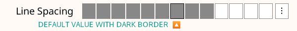

Je leest momenteel de Nederlandse (vertaalde) versie van de KOReader Gebruikershandleiding. Vrijwilligers zijn deze handleiding ook aan het vertalen naar andere talen. We hebben veel vertalingen in uitvoering, zoals je kunt zien in de algemene vertaalstatus hieronder. Maar we linken enkel naar talen die voor meer dan 50% vertaald zijn.
Voor meer dan 80% vertaald
- üá®üá≥ Chinese (vereenvoudigde Han-tekens)
- üá∞üá∑ Koreaans
- üá∑üá∏ Servisch
- üá∏üá∞ Slovaaks
- üáÆüá≥ Tamil
- üá∫üᶠOekra√Øens
Voor 50% tot 80% vertaald
Om alle talen te zien die momenteel worden vertaald en om bij te dragen aan de vertaling van de gebruikershandleiding, ga naar de Weblate-vertaalpagina van ons project.
Algemene vertaalstatus van de gebruikershandleiding

Deze handleiding is voornamelijk ontworpen voor kleurenschermen. Als je deze voor het eerst gebruikt, raden we sterk aan deze te lezen op een computer, tablet of mobiele telefoon. Het zien van gebruikersinterface-elementen gemarkeerd in kleur maakt het leven gemakkelijker bij het leren van KOReader. Natuurlijk kun je dit ook lezen op je e-ink apparaat, maar de ervaring zal niet optimaal zijn.
Je kunt de zoekfunctie van je browser gebruiken om een specifiek onderwerp te vinden (gewoonlijk Ctrl + F). Als je een suggestie of vraag hebt met betrekking tot deze gebruikershandleiding, kun je schrijven naar deze GitHub-discussie.
Delen van de tekst in deze handleiding zijn kleurgecodeerd op basis van hun categorieën:
ONDERDELEN VAN KOREADER (BLAUW) |
Statusbalk, Boekkaart… |
MENUPADEN (GROEN) |
BOVENMENU /  / Markeerstijl / Markeerstijl |
EXTERNE APPS (PAARS) |
Calibre, Readwise, KoHighlights... |
We hebben ook verschillende vakken door de handleiding heen om je te informeren of te waarschuwen:
KOReader wordt ontwikkeld en ondersteund door vrijwilligers van over de hele wereld. Je kunt ook deel uitmaken van dit project door:
- Bugs op te lossen en nieuwe functies te implementeren
- Het programma te vertalen naar je taal of een bestaande vertaling verbeteren
- Anderen helpen met je kennis in de forums of bij GitHub issues en discussies
Bekijk de Contact-sectie voor de links.
Handleiding laatst bijgewerkt: 2025-03-25
- WAT KUN JE MET KOREADER DOEN?
- BASISGEBRUIKSINFORMATIE
- DE GEBRUIKERSINTERFACE LEREN KENNEN
- DOOR JE BOEK NAVIGEREN
- TEKSTWEERGAVE AANPASSEN
Ondanks zijn minimalistische uiterlijk is KOReader een zeer krachtige en aanpasbare applicatie. Deze sectie is als een inhoudsopgave die gericht is op instructies. Dus als je een nieuwe gebruiker bent, is dit de beste plek om te beginnen. Hier kun je lezen wat KOReader kan doen en leren hoe je het doet door deze  links te volgen naar de genoemde secties.
- USB-massageheugen modus voor ondersteunde apparaten 
- Cloudopslag (Dropbox/FTP/Webdav) met geschikte accounts 
- KOReader kan fungeren als een SSH-server, zodat je een SFTP-applicatie of je bestandsbeheerder kunt gebruiken om bestanden direct over te brengen 
- Met de Calibre plugin kun je boeken rechtstreeks vanuit je Calibre-bibliotheek naar je KOReader-apparaten verzenden via wifi 
- Met de Nieuwsdownloader plugin kun je RSS- en Atom-nieuwsberichten naar je apparaat downloaden als HTML-bestanden 
- Met de Wallabag plugin kun je artikelen ophalen uit je Wallabag account (een server-gebaseerde 'lees-het-later' service zoals Pocket) 
- Change fonts (including your own), font size, contrast, boldness, kerning, word spacing, word expansion, text alignment, line spacing, column layout, margins... 
- Gebruik de inbegrepen krachtige stijlaanpassingen of schrijf uw eigen om precies te wijzigen hoe uw boeken worden weergegeven 
- Keer schermkleuren om voor nachtmodus, handmatig of automatisch 
- Pas de lichtkleur warmte automatisch aan 
- Markeer tekst met verschillende stijlen en kleuren, plaats bladwijzers 
- Twee-tik modus voor academische/langere markeringen 
- Notities toevoegen met een aanpasbaar toetsenbord inclusief diakritische tekens 
- Screenshots maken 
- Volg je leesstatistieken inclusief leesvoortgang, tijdsbereik en kalenderweergaves
- Exporteer je notities en markeringen naar je apparaat als tekst, markdown, HTML, JSON of Kindle-knipsel formaat 
- Synchroniseer met online services zoals Joplin, Readwise, Memos, Flomo en XMNote 
- Krachtige Bestandsverkenner waar je bestanden en mappen kunt kopiëren, verplaatsen, hernoemen, aanmaken, verwijderen en bulkoperaties uitvoeren 
- Bekijk je bibliotheek zoals je wilt met vele gedetailleerde en mozaïek weergaves 
- Voeg je boeken toe aan je Favorieten voor snelle toegang of maak je eigen Collecties met sorteren en filteren 
- Doorbladerwidget om snel tussen pagina's, hoofdstukken en bladwijzers te springen 
- Unieke Boekkaart om een vogelvluchtkaart van het boek te zien, inclusief alle notities en markeringen 
- Paginabrowser om door pagina's te bewegen als door een filmrol 
- Bladwijzerbrowser om eenvoudig door je markeringen en notities te bladeren 
- Maak een alternatieve inhoudsopgave automatisch of handmatig als degene die bij boek hoort niet bevalt 
- Verberg en sluit bepaalde delen van het boek uit, zoals Bijlage, Index, Referenties enz. voor nauwkeurigere paginatellingen 
- Krachtig gebarensysteem met 200+ acties laat je elk aspect van KOReader bedienen met een tik of veeg 
- Als je een toetsenbord hebt (intern, bekabeld of bluetooth) kun je ook sneltoetsen aan deze acties toewijzen 
- Of maak je eigen menu's met je favoriete acties met het Snelmenu en open ze met een tik of veeg 
- Maak Profielen om elk aspect van KOReader te sturen en acties te automatiseren 
- Zoek in het document door tekst te selecteren of in te voeren (inclusief reguliere expressies)
- Zoek in je bladwijzers, markeringen en notities
- Zoek tekst op in Wikipedia of in geïnstalleerde woordenboeken en vertaal het met een lange tik
- Vertaal hele pagina's tegelijk tussen meer dan 130 talen
- Met ons krachtige plugin-systeem kun je zelfs de tekst bespreken met ChatGPT (na installatie van de plugin) 
- KOReader kan zichzelf updaten 
- Dim of zet je schermverlichting uit na een ingesteld interval
- Stel je paginaverversingsintervallen in voor verschillende leesomstandigheden 
- Stel je eigen schermbeveiliging in uit veel opties zoals willekeurige afbeeldingen, boekomslag, lezen, voortgang, enz.
- Stel batterij laadlimiet alarmen in om diepe ontlading/overlading te voorkomen 
- Stel een geheugengebruikwaarschuwing in (nuttig voor apparaten met minder geheugen) en herstart optioneel KOReader bij het bereiken van deze limiet 
- Snijd marges automatisch of handmatig bij
- Herindeling van documenten om tekst te extraheren en gemakkelijker te lezen op een klein scherm
- Pas OCR toe op documenten zonder tekstlagen, zoals gescande oude boeken 
- Verschillende zoomtypes en paginastroom-richtingen om meerkolommige documenten zoals wetenschappelijke artikelen gemakkelijk te lezen 
- Recht automatisch scheef gescande documenten, zoals gescande oude boeken 
- Sla je markeringen direct op in PDF's zodat je ze kunt zien zonder KOReader 
- Speciale Paneelzoom functie voor het lezen van manga's 
- Instelbare schermverversings instellingen voor perfect balanceren tussen ghosting en snelheid 
- Voeg je eigen CSS-stijlaanpassingen toe voor boeken 
- Gebruikerspatches systeem waarmee je het kerngedrag van KOReader kunt wijzigen 
- Maak een QR-code van je klembord om tekst en links te delen naar andere apparaten
- Bekijk HTML-broncode van een EPUB-document
- Maak en bewerk tekstbestanden op je apparaat
- Open een terminalemulator en voer commando's uit op je apparaat
- Bekijk je CPU-, geheugen- en batterijgebruikstatistieken
KOReader ondersteunt PDF, EPUB, DJVU, MOBI, CBZ, CBT, DOCX, RTF, HTML, TXT, XPS, FB2, PDB, CHM en MD bestanden. Het kan ook ZIP archieven openen en afbeeldingsbestanden tonen.
Er zijn veel manieren om je documenten naar je apparaat over te zetten. Let op dat je mogelijk KOReader moet herstarten om de overgedragen documenten te indexeren (of directory verversen als je Pocketbook/Android hebt).
Naast het overzetten van bestanden op dezelfde manier als je zou doen met de ingebouwde lezer-applicatie, zijn er andere opties beschikbaar afhankelijk van je apparaat:
- USB-massaopslagmodus binnen KOReader: Deze modus is beschikbaar voor KOBO en sommige CERVANTES apparaten.
- Cloudopslag (Dropbox/FTP/Webdav): Om deze functie te gebruiken moeten accounts worden toegevoegd voor een cloudopslagserver via het menu wat hieronder wordt getoond. Het proces wordt uitgelegd via info knoppen in het menu bij het toevoegen van accounts:
BOVENMENU (in Bestandsverkenner) /
 / Cloudopslag
/ Cloudopslag - SSH/SFTP-toegang: KOReader kan fungeren als een SSH-server waartoe je vanaf een computer toegang hebt om bestanden over te zetten (beschikbaar op Kobo, Kindle, Cervantes). Je kunt een SFTP-applicatie gebruiken (zoals Filezilla) of via je bestandsbeheerder openen als je besturingssysteem dat ondersteunt. Zie onze wiki voor instructies en bekijk ook het waarschuwingsvak hieronder.
- Calibre overdracht: Met de Calibre plugin kun je documenten rechtstreeks vanuit je Calibre bibliotheek naar je KOReader apparaten sturen via een wifi verbinding. Bekijk onze wiki voor instructies.
- Nieuwsdownloader: met deze plugin kun je RSS en Atom nieuwsberichten downloaden als HTML bestanden. Bekijk de wiki voor instructies.
- Wallabag: met deze plugin kun je artikelen ophalen uit Wallabag, een server-gebaseerde lees-het-later dienst zoals Pocket. Zie de wiki-pagina voor meer info.
WAARSCHUWING Wees voorzichtig als je besluit de SSH-functie zonder wachtwoord te gebruiken, omdat dit open toegang tot je apparaat toestaat. Maar als je een lokale wifi gebruikt en je apparaat wifi voor een korte tijd aanzet, is dit risico verwaarloosbaar.
De volgende methodes zijn beschikbaar voor toegang tot je boeken:
- Bestandsverkenner - Toegewijde sectie is hier: Bestandsverkenner gebruik
- Favorieten - Een lijst waaraan je je boeken kunt toevoegen door lang op ze te drukken in de Bestandsverkenner
- Geschiedenis - Lijst van boeken die je geopend hebt
- Collecties - Gepersonaliseerde boekenlijsten die je gemaakt hebt. Toegewijde sectie is hier: Collecties
Je kunt wijzigen hoe deze schermen eruit zien via:
 / Weergavemodus
/ WeergavemodusAls je wilt wijzigen hoeveel items zichtbaar zijn op deze schermen, kijk hier:
/ Instellingen / Mozaïek- en gedetailleerde lijstinstellingenJe kunt gebaren toewijzen voor elk van deze dialogen. Bijvoorbeeld tijdens het lezen van een boek kun je je Geschiedenis of Favorieten benaderen met een gebaar en een ander boek openen zonder door de Bestandsverkenner te gaan.
Je kunt een boek zoeken in het Geschiedenis scherm op bestandsnaam of boekmetadata via de hamburger menu knop linksboven.
Je kunt KOReader ook instellen om te starten met het Favorieten of Geschiedenis scherm in plaats van de Bestandsverkenner via:
/ Start met
In de afbeelding hierboven zie je de posities van de standaard tikzones van KOReader. Om het bovenste menu of onderste menu weer te geven, kun je op de aangegeven zones tikken. Je kunt ook naar beneden vegen in de bovenste zone om het hoofdmenu te tonen. Op niet-touch apparaten zoals Kindle 4 kun je het ondermenu openen door de knop in te drukken die overeenkomt met de ENTER/OK actie.
Als je beide menu's tegelijk wilt openen kun je de bovenmenu-zone instellen om zowel het bovenmenu als het ondermenu tegelijk te openen via dit menu:
 / Tikken en gebaren / Menu activeren
/ Tikken en gebaren / Menu activeren
Hoek-tikzones kunnen gebruikt worden voor veel verschillende soorten gebaren, waaronder TIK, DUBBELTIK, TWEEVINGERTIK en TIK en INGEDRUKT HOUDEN.
VORIGE PAGINA en VOLGENDE PAGINA zones kunnen ook tegelijk gebruikt worden voor DUBBELTIK gebaren.
Op de Statusbalk zone kan getikt worden om tussen de statusbalk items te wisselen als slechts één item zichtbaar is. Als alle items zichtbaar zijn, zal tikken de statusbalk tonen en verbergen.
- Lettertype wijzigen*:BOVENMENU / / Lettertype
- Maak het lettertype groterONDERMENU /

- Maak het lettertype vetterONDERMENU /

- Keer de kleuren op het scherm om (wit op zwart)BOVENMENU / / Nachtmodus
Je kunt ook andere opmaakopties wijzigen via het ONDERMENU om de weergave van je tekst fijn af te stellen. Dit zijn alleen snelle tips om je op weg te helpen. Er is een volledige sectie gewijd aan TEKSTWEERGAVE AANPASSEN
Je kunt de schermverlichting bedienen via dit menu. Als je warme verlichting hebt (normale witte leds + oranje) kun je die afzonderlijk regelen vanuit deze dialoog. Je kunt ook een gebaar aan deze dialoog toewijzen:
/ VerlichtingJe kunt via dit menu een boekomslag of een eigen afbeelding als schermbeveiliging kiezen:
/ Scherm / SchermbeveiligingJe kunt JPG/PNG-bestanden als schermbeveiliging gebruiken (goed geditherde grijswaardenafbeeldingen zien er het beste uit). Kopieer de bestanden vanaf je computer naar een willekeurige map op je apparaat en kies die map als schermbeveiligingsmap via dit menu:
/ Scherm / Schermbeveiliging / InstellingenZie dit Mobileread forumbericht voor geavanceerde informatie over het voorbereiden van schermbeveiligingsafbeeldingen.
Als je informatie zoekt over sneltoetsen, klik dan hier om naar die sectie te gaan. Deze paragraaf legt alleen het toetsenbordgebruik uit.
- Tik buiten het invoerveld om het toetsenbord te sluiten; tik op het invoerveld om het weer te tonen
- Veeg omhoog over toetsen om de hoofdletter van die letter in te voeren (of kleine letter als je al in shift-modus zit)
- Je kunt het uiterlijk van het toetsenbord wijzigen:
BOVENMENU / / Apparaat / Toetsenbord / Toetsenbordinstellingen
- Je kunt meer dan één indeling selecteren:
BOVENMENU / / Apparaat / Toetsenbord / Toetsenbordindeling
- Je kunt wisselen tussen je geselecteerde indelingen door op het
 pictogram op het toetsenbord te tikken
pictogram op het toetsenbord te tikken
Het KOReader-toetsenbord laat je extra tekens invoeren door een toets ingedrukt te houden. De meest gebruikte extra tekens staan hieronder. Houd de toets in het grijze vak ingedrukt om de omliggende tekens te krijgen:

Naast het lang-ingedrukt-popup venster kun je deze extra tekens ook invoeren door over een toets te vegen. In het voorbeeld hieronder kun je omhoog vegen op de a-toets voor een hoofdletter A of in andere richtingen voor de getoonde tekens. Het voorbeeld toont de volledige popup ter demonstratie; je hoeft die niet te openen en kunt direct vegen. Als je de posities gewend bent gaat dit veel sneller.

Als deze functie je in de weg zit kun je haar uitschakelen door het volgende uit te vinken:
/ Apparaat / Toetsenbord / Vegen om extra tekens in te voerenDaarnaast zijn er enkele sneltoetsen om tekst makkelijker te bewerken. Je kunt deze toetsen ingedrukt houden voor extra acties:
- Pijl links - Verplaatst de cursor naar het begin van de regel
- Pijl rechts - Verplaatst de cursor naar het einde van de regel
Ook de backspace-toets gedraagt zich anders wanneer je er veeggebaren op maakt:
- Tik: verwijdert één teken
- Lang ingedrukt: verwijdert de hele regel
- Veeg naar links: verwijdert een deel van het woord links van de cursor
- Veeg omhoog: verwijdert het hele woord
Voor meer informatie zie de bijbehorende wikipagina.
KOReader bevat ook het Chinese lijnentoetsenbord voor het invoeren van vereenvoudigde en traditionele Chinese tekens. Meer info vind je in onze wiki.
Deze plugin laat je de warmte van de schermverlichting op apparaten met natuurlijk (geel/oranje) licht aanpassen en nachtmodus (omgekeerde schermkleuren – witte tekst op zwarte achtergrond) automatisch volgens een schema instellen. Hij kan beide sturen of je kiest alleen warmte of alleen nachtmodus zodat je de andere handmatig regelt.
Deze plugin staat standaard aan wanneer je KOReader installeert. Staat hij om wat voor reden dan ook niet in het menu, dan kun je hem hier inschakelen:
/ Meer hulpmiddelen / Automatische warmte en nachtmodusJe kunt de warmte van de schermverlichting automatisch aanpassen op twee manieren:
Vast schema: in deze modus verandert de warmte volgens het dagelijkse schema dat je hebt ingevoerd. Deze modus is statisch en houdt geen rekening met de lengte van de dag. Het schema blijft het hele jaar gelijk.
Zonpositie: deze optie berekent de positie van de zon op jouw locatie aan de hand van ingevoerde coördinaten en hoogte. De warmte wordt geleidelijk aangepast volgens deze berekende gegevens. Deze modus is dynamisch. Als de daglengte verandert past de plugin het schema daarop aan.
Kijk eerst naar deze afbeelding om vertrouwd te raken met de in de plugin gebruikte termen:

- Ga naar het pluginmenu: BOVENMENU / / Scherm / Automatische warmte en nachtmodus
- Tik op Activeren en vervolgens op Volgens het vaste schema
- Ga terug en tik op Instellingen vast schema
- Stel hier het overgangsschema voor de warmte in door tijden voor de verschillende elementen op te geven. Zie de afbeelding hierboven voor uitleg.
- Ga naar het pluginmenu:
BOVENMENU / / Scherm / Automatische warmte en nachtmodus
- Tik op Activeren en vervolgens op Volgens de zonpositie
- Ga terug en tik op Locatie-instellingen. Vul je coördinaten (verplicht) en hoogte (optioneel) correct in en geef de locatie een naam.
- Ga terug en tik op Instellingen warmte en nachtmodus
- Stel hier het overgangsschema voor de warmte in door tijden voor de verschillende elementen op te geven. Zie de afbeelding hierboven voor uitleg.
Je huidige schema is te raadplegen via de optie Huidig actieve parameters.

Tijdens het instellen van de percentages voor verschillende intervallen kun je een interval ook op Nachtmodus zetten, wat de schermkleuren omkeert wanneer het interval start. Als je minimale verlichting nog te fel is of je een donkere achtergrond wilt, activeer dit dan. Vink in de dialoog hieronder Nachtmodus aan en tik op Stel in.
Als je dit doet verschijnt een maantje in het menu naast het interval. Uitschakelen doe je door het vinkje Nachtmodus in dat interval te verwijderen.

Deze functie schakelt je schermverlichting in bij zonsondergang en uit bij zonsopkomst volgens de Huidig actieve parameters. Je kunt dit overschrijven door de verlichting handmatig aan/uit te zetten. Bij de volgende zonsopkomst/-ondergang zal AutoWarmth het opnieuw aanpassen indien nodig. Activeer via de optie Verlichting uit overdag.
Als je wilt dat de warmte snel verandert in plaats van geleidelijk:
- Stel de modus in op Vast schema volgens bovenstaande instructies
- En pas de instellingen aan zoals op de afbeelding hieronder:

Zoals je ziet is er slechts één minuut verschil tussen dag-nacht overgang. De schermwarmte gaat dus van 0 naar 100 (of omgekeerd) in één minuut. Vergroot deze tijd om de overgang langer te laten duren.
KOReader heeft een eenvoudige, voornamelijk zwart-witte interface omdat kleurverlopen en verschillende grijstinten flikkeren en ghosting kunnen veroorzaken op e-ink schermen, wat de leeservaring verslechtert.
KOReader heeft 2 hoofdinterfaces: het leesscherm en de bestandsverkenner. Hier leggen we het leesscherm uit. De bestandsverkenner wordt uitgelegd in deze sectie van de handleiding.
Het LEESSCHERM heeft twee menu's:
- Het BOVENMENU bevat items voor algemeen gebruik van KOReader. Hier krijg je toegang tot je boeken, KOReader-voorkeuren, plugins, enz.
- Het ONDERMENU richt zich op opties voor documentopmaak zoals letterdikte/-grootte, regelafstand, enz. Bij het aanpassen van de tekstweergave werk je vooral in het ONDERMENU.


De afbeelding hierboven toont de elementen die je op het scherm ziet tijdens het lezen:
- Indicatorpictogrammen: deze pictogrammen informeren je over lopende processen en statussen. Je ziet ze linksboven tijdens bepaalde acties. Normaal zijn ze kleiner, hier groter voor de duidelijkheid. De volgende kop legt ze uit: Indicatorpictogrammen
- Statusbalk: dit is een sterk aanpasbaar gebied met diverse informatie over je boek en KOReader. Meer details: Statusbalk
- Alternatieve statusbalk: Naast de standaard statusbalk is er een Alt-statusbalk bovenaan de pagina (indien ingeschakeld). Details: Statusbalk
- Referentie-paginanummers: als de uitgever de gedrukte paginanummers heeft meegeleverd zie je ze zo. Meer info: Paginanummering en referentienummers
- Markeringstypes: hier zie je de verschillende soorten markeringen. Op geschikte schermen kun je ook gekleurde markeringen maken. Zie: Bladwijzers, markeringen en notities
- Notitiepictogram: verschijnt wanneer je een notitie aan een markering toevoegt. Er zijn verschillende types. Meer info: Bladwijzers, markeringen en notities
KOReader heeft enkele indicatoren om je te informeren over bepaalde lopende processen en toestanden zoals je kunt zien in de afbeelding hierboven. Je zult ze zien in de linkerbovenhoek van je scherm tijdens bepaalde bewerkingen.
   
|
Gedeeltelijke rendering-pictogrammen Deze groep pictogrammen hoort bij de gedeeltelijke rendering-procedure en waarschijnlijk zie je deze pictogrammen vaker dan de andere. Je ziet deze pictogrammen wanneer je de instellingen wijzigt op het ondermenu. Deze functie stelt je in staat om de tekstweergave-aanpassingen veel sneller te bekijken door alleen het huidige hoofdstuk te renderen in plaats van het hele boek. Ook het draaien van je schermoriëntatie is nu veel sneller dankzij deze functie. Deze functie is standaard INGESCHAKELD. Indien nodig kan het per boek uitgeschakeld worden (met een tik), of globaal (met een lange tik) op: BOVENMENU /
/ Document / Gedeeltelijke weergave inschakelenNa bevestiging van je wijzigingen moet het hele boek opnieuw gerenderd worden; dit is dus een meerstapsprocedure. Deze pictogrammen tonen de fase van het renderen zoals hieronder uitgelegd: |
|
In dit stadium wordt het document gedeeltelijk weergegeven. Het aantal pagina's, de voettekstinformatie en veel andere zaken zijn onjuist. Je kunt zien hoe de nieuwe instellingen eruitzien en deze verder aanpassen. In deze toestand kun je ook pagina's omslaan en links volgen. |
|
Een volledige weergave wordt op de achtergrond uitgevoerd. Je kunt nog steeds pagina's omslaan, links volgen en instellingen wijzigen. |
|
De volledige weergave is voltooid, maar nog niet toegepast, omdat KOReader wacht tot je inactief bent om de rest van het boek opnieuw te laden (inactief = geen interactie met het apparaat). Je kunt nog steeds pagina's omslaan, links volgen en instellingen wijzigen. |
|
|
Je was een tijdje inactief, dus KOReader laadt nu het hele document opnieuw. In deze stap is KOReader geblokkeerd om interactie te voorkomen. |
 |
Markeerpictogram Dit pictogram verschijnt wanneer je in de Selecteer en markeer-modus bent. KOReader heeft een extra markeermodus waarmee je een markering kunt starten en pagina's kunt omslaan om lange markeringen te maken die meerdere pagina's beslaan. Lees hierover in de sectie BLADWIJZERS, MARKERINGEN EN NOTITIES. Wanneer je in deze modus een markering start verschijnt dit pictogram in de hoek als herinnering dat je nog in de markeermodus zit. Het verdwijnt wanneer je de markering beëindigt door het einde van het fragment te selecteren of wanneer je de markering annuleert (door opnieuw op het begin van je markering of op dit markeerpictogram te tikken). |
 |
Pokémon bal-pictogram Dit pictogram verschijnt wanneer je lang op een woord drukt (opzettelijk of per ongeluk). KOReader heeft een normaal lang drukken menu. En een extra heel lang drukken menu wanneer je je vinger langer dan 3 seconden vasthoudt. Dit pictogam betekent dat je dit heel lang drukken menu hebt geactiveerd. |
 |
Flipmodus-pictogram Dit pictogram verschijnt wanneer je op de linkerbovenhoek tikt als:
Deze modus toont tijdelijk de volledige pagina zonder bijsnijden, geschaald zodat hij op je scherm past. Je kunt in deze modus bladeren. Tik op dit pictogram om de modus te verlaten. |
Documenttypes zoals epub, mobi, html hebben van nature geen vaste paginanummers omdat het herschikbare documenten zijn. Dat betekent dat ze kunnen worden aangepast aan de schermgrootte en -oriëntatie van het apparaat (in tegenstelling tot bijvoorbeeld pdf- of djvu-bestanden die een vaste paginagrootte hebben).
Als je de lettergrootte van een herschikbaar document vergroot, neemt ook het aantal pagina's toe omdat er nu minder tekst op één pagina past. Dit kan problemen geven omdat een markering die je op pagina 38 maakte na de aanpassing op pagina 42 kan staan.
KOReader ondersteunt referentiepaginanummers, waarmee uitgevers paginanummers uit gedrukte boeken rechtstreeks in de e-bookversie kunnen insluiten. Wanneer je deze functie inschakelt berekent KOReader de paginanummers niet zelf maar toont het de ingesloten paginanummers van de uitgever. Dit betekent dat het paginanummer in de statusbalk overeenkomt met de papieren versie.
Voordelen van referentiepaginanummers:
- Referentiepaginanummers maken nauwkeurige citaties mogelijk doordat ze overeenkomen met de paginanummers in de gedrukte versie.
- Referentiepaginanummers helpen bij navigatie, vooral voor lezers die bekend zijn met de gedrukte versie. Ze helpen specifieke passages of citaten eenvoudiger terug te vinden in de digitale versie.
- Omdat digitale boeken op verschillende apparaten en platforms kunnen worden gelezen, elk met hun eigen lettertype- en weergave-instellingen, kunnen weergegeven paginanummers sterk variëren. Referentiepaginanummers bieden een consistent referentiepunt wanneer je hetzelfde boek op verschillende apparaten zoals e-reader en telefoon leest.
Je kunt deze functie inschakelen via:
 / Referentiepagina's / Referentiepaginanummers gebruiken
/ Referentiepagina's / Referentiepaginanummers gebruikenAls je ook de optie Referentiepaginalabels in marge weergeven aanvinkt in hetzelfde menu, worden deze paginanummers naast de tekst in een klein lettertype weergegeven.
Let op: dit menu verschijnt alleen als er ingesloten referentiepaginanummers in je boek aanwezig zijn.
KOReader heeft twee statusbalken: een Onderste statusbalk die standaard is ingeschakeld en een Alt-statusbalk die bovenaan de pagina verschijnt als je hem inschakelt. Deze Alt-statusbalk is alleen beschikbaar in herschikbare documenten (epub, html, docx, rtf, txt…).
Bottom status bar is the newer one which is actively maintained. Alt status bar is a remnant from earlier versions of KOReader so we are not adding new features to it. But you can still enable this Alt status bar if you find it useful. You can enable it from:
/ Alt-statusbalkJe kunt de Alt-statusbalk configureren via dit menu:
/ Statusbalk / Alt-statusbalkDe verdere instructies in deze sectie gelden voor de Onderste statusbalk.
Je kunt de onderste statusbalk configureren via dit menu. Verken gerust het submenu INSTELLINGEN om de statusbalk naar wens aan te passen.
/ StatusbalkEr zijn veel items die je op de statusbalk kunt weergeven. Standaard wordt er maar één tegelijk getoond en moet je op de statusbalk tikken om ertussen te wisselen. Als je alle items tegelijk wilt tonen, schakel dat hier in:
/ Statusbalk / Items configureren / Toon alle geselecteerde items tegelijkAls je de bovenstaande optie hebt ingeschakeld kun je de statusbalk niet meer verbergen door erop te tikken. Als je hem wilt verbergen moet je hier een gebaar toewijzen om de statusbalk te wisselen:
Statusbalkitems sorteren:
/ Statusbalk / Items configureren / Statusbalkitems sorterenEr is een speciaal statusbalkitem genaamd Aangepaste tekst. Dit item kan door jou gekozen tekst op de statusbalk tonen. Je kunt deze functie ook gebruiken om een scheiding aan te brengen tussen statusbalkitems zoals in het voorbeeld hieronder:

- Activeer deze optie eerst met een korte tik in dit menu
BOVENMENU / / Statusbalk / Aangepaste tekst: ‘KOReader’
- Houd het daarna nogmaals lang ingedrukt om de instellingen te openen. Voer een "spatie"-teken in in het eerste vak en voer het aantal herhalingen in het tweede vak in; dat bepaalt hoe breed je scheiding wordt.
Je kunt ook een ander teken als scheiding gebruiken. Je kunt dit item net als andere statusbalkitems verplaatsen om de volgorde (en dus je groepen) te wijzigen.
Voortgangsbalk in de statusbalk toont normaal gesproken je voortgang voor het hele boek. Maar het kan ook je voortgang voor het huidige hoofdstuk tonen. Dit kan bijvoorbeeld nuttig zijn als een boek veel korte hoofdstukken heeft. In dit geval kan het moeilijk zijn om je voortgang in het huidige hoofdstuk te zien, dus een hoofdstukstatusbalk kan hier nuttiger zijn. Je kunt deze functie inschakelen via dit menu:
/ Statusbalk / Voortgangsbalk / Toon hoofdstukvoortgangsbalk in de plaatsJe kunt ook een gebaar toewijzen om te wisselen tussen de normale en de hoofdstukvoortgangsbalk. Je vindt deze actie onder:
Hier geven we alleen een overzicht van de items in de structuur van het bovenmenu om je vertrouwd te maken met het menu. Gedetailleerde informatie is beschikbaar in de gerelateerde secties van deze gids.

- NAVIGATION: This menu contains items that allows you to navigate the book you are currently reading. Table of contents, bookmarks, book map...
- TYPESETTING: This menu contains items that allows you to change the appearance of your book. Font settings, style tweaks...
- SETTINGS: This menu contains settings for KOReader and your device. E-ink, light, gesture settings...
- HULPMIDDELEN: Dit menu bevat plugins die de functionaliteit van KOReader kunnen uitbreiden.
 SEARCH: This menu contains items related to search and lookup. Text search, dictionary, translation, Wikipedia...
SEARCH: This menu contains items related to search and lookup. Text search, dictionary, translation, Wikipedia...- BESTANDSBEHEER: Deze knop opent de bestandsbrowser waarmee je je bibliotheek beheert.
 HOOFDMENU: Dit menu bevat hulpmiddelen voor toegang tot je boeken, zoals geschiedenis, favorieten, collecties. Ook boekinformatie, updaten en afsluiten vind je in dit menu.
HOOFDMENU: Dit menu bevat hulpmiddelen voor toegang tot je boeken, zoals geschiedenis, favorieten, collecties. Ook boekinformatie, updaten en afsluiten vind je in dit menu.

Weergavemodus: Als je overschakelt naar de doorlopende modus kun je door het document scrollen zoals op een webpagina. Deze modus is geschikter voor niet-e-ink schermtypes (LCD, OLED). In de doorlopende modus raak je de boven- en ondermarges kwijt zodat tekst op de eerste en laatste regel kan worden afgesneden. Om dit op te lossen kun je Pagina-overlap inschakelen:
/ Pagina-overlapRendermodus: Deze optie bepaalt hoe je document door KOReader wordt weergegeven. Standaard is WEB en meestal hoef je dit niet te veranderen. Wanneer een boek (of opgeslagen webpagina) erg ingewikkeld is (gespecificeerde breedtes of marges, negatieve marges, floats enz.) en de lay-out er slecht uitziet of buiten het scherm valt kun je andere rendermodi proberen.
Zoom (dpi): Deze instelling fungeert als een algemene zoomfactor voor het document (behalve voor de lettergrootte). Bij 96 dpi (de standaard) worden afbeeldingen op hun oorspronkelijke afmetingen gerenderd. Je gebruikt dit vooral als je afbeeldingen groter wilt maken zonder de tekst groter te maken.

De instellingen Woordafstand en Woorduitbreiding hangen samen en bepalen hoe je tekst eruitziet wanneer hij wordt uitgevuld. Bij uitvullen wordt ruimte tussen woorden toegevoegd zodat beide randen van elke regel met de marges uitlijnen. Omdat het aantal woorden per regel niet altijd gelijk is moet tekst soms worden samengedrukt of uitgerekt om de regel te vullen.
Woordafstand: Hoeveel de spaties in een regel tekst kunnen worden samengedrukt om meer woorden te laten passen. Deze instelling beïnvloedt de woorden niet, alleen de ruimte ertussen.
Woordenexpansie: Als er te veel witruimte in een regel zit, hoeveel daarvan in de woorden verdeeld mag worden door ze uit te rekken. Deze instelling beïnvloedt het uiterlijk van woorden. Wil je niet dat woorden uitzetten, zet dit dan op geen.
Je kunt met verschillende instellingen experimenteren tot de tekst er mooi uitziet en ze daarna als standaard instellen via hun respectieve dialoogvensters.

Contrast en Letterdikte zijn twee opties om je tekst vetter (of lichter) te maken. Je kunt hetzelfde uiterlijk bereiken met beide opties maar ze gebruiken verschillende methoden. Je kunt ze natuurlijk ook tegelijk gebruiken.
De verschillen ertussen kunnen als volgt worden samengevat:
+ Verandert de letterbreedte niet; boeklengte blijft hetzelfde
+ Hoeft document niet opnieuw te renderen, sneller
- Kan er slecht uitzien op LCD- of lage-DPI-schermen
+ Gebruikt echte gewichtvarianten als je die hebt geïnstalleerd
+ Ziet er beter uit op LCD- of lage-DPI-schermen
- Moet lettertypes opnieuw renderen, langzamer
Lettertype-hinting past je tekst aan voor maximale leesbaarheid volgens het pixelraster van je scherm. native gebruikt de interne hintinginstructies van het lettertype; auto gebruikt FreeType’s hintalgoritme. auto is veiliger omdat lettertypebestanden problematische hintinginstructies kunnen bevatten. Bovendien gaat auto beter om met CJK-tekst. Probeer verschillende instellingen om te zien welke het beste oogt op jouw apparaat.
Kerning past de ruimte tussen letters aan voor een visueel aantrekkelijk resultaat. Standaard is de optie best, die trager kan zijn bij het openen van bestanden (afhankelijk van je apparaat) maar betere ondersteuning voor ligaturen biedt (zie afbeelding hieronder), gekoppelde Arabische glyphs en enkele andere schriften. Als je apparaat traag is kun je good proberen; dat is sneller en ziet er vaak nog goed uit met westers Latijns schrift.


Alt status bar enables an alternative status bar which is available only in reflowable documents (EPUB, HTML, DOCX, RTF, TXT…). After enabling it here, you can configure alt status bar via:
/ Statusbalk / Alt-statusbalkEmbedded style and embedded fonts determine if publisher’s styles and fonts embedded in the document will be used (or ignored) to render the document. These are general on/off switches. You can achieve more fine tuned tweaks for your document via:
/ StijlaanpassingenBeeldschaal bepaalt hoe afbeeldingen in je document worden weergegeven. Best ziet er mooier uit maar is langzamer.
De gebruikersinterface en opties van KOReader kunnen veranderen afhankelijk van het bestandstype dat je opent. Er zijn twee hoofdcategorieën documenten:
- Fixed layout documents (pdf, djvu, image files...)
- Herindelbare documenten (epub, html, docx, rtf, txt…).
KOReader heeft veel functies dus het menusysteem weerspiegelt die complexiteit. We hebben een functie Menu zoeken om menu-items snel te vinden. Als je de naam van een menu-item weet maar niet meer waar het staat, kun je deze functie gebruiken:
/ Help / Menu zoekenJe kunt deze functie ook aan een gebaar toewijzen of toevoegen aan je Snelmenu voor snellere toegang.
In het ondermenu kun je een optie lang ingedrukt houden om de uitleg te zien. |
|
Je kunt de interfacetaal wijzigen via: BOVENMENU /
/ Taal |
|
Als je de grootte van de gebruikersinterface wilt aanpassen is er een DPI-instelling voor: BOVENMENU /
/ Scherm / Scherm-DPIYou can choose a value from the menu or select Custom dpi to enter a value for fine tuning: Higher DPI = Bigger Interface. Note that there is also a Zoom (dpi) setting in the bottom bar. That one is related to the documents only. You can find the explanation in the next section. |
If you tap and hold an option or menu item (font weight, line spacing etc.), you can set its value as DEFAULT. The new value will only be applied to books opened from now on. Previously opened books will keep their settings. You can identify default values as a star (★) in the menu or as a black border around the indicators as seen below: 
|
You can close full screen dialogs (History, Table of Contents, Reading Statistics etc.) by swiping down. (Except Bookmarks window. You can use any multi swipe gesture to close this one) |
You can take a screenshot by making a long diagonal swipe with your finger. Also touching opposing diagonal corners will take a screenshot. You can use this second gesture for example when viewing an image. Also if your device has a keyboard, you can take a screenshot with the Alt + Shift + G shortcut. |
If you want to open a random page of a book, we have a Jump to a random page action which you can assign to any gesture. It is in the Reader category of the Gesture Manager. |

In dialogs containing adjustment arrow buttons like the one above, you can tap and hold on arrow buttons to change the value in bigger increments. You can close this type of dialog (non-full screen) by tapping outside of its window. You can move this type of dialog by holding its window title and dragging. You can make this type of dialog semi-transparent by tapping and holding the window title (when you want to see the text under it while adjusting a value). |
Creating new folders - In situations when you need to choose a location (cloud storage, move to archive plugin, exporter plugin), KOReader presents you a screen that looks like our File Browser. If you want to create a new folder while choosing:
|
If you want to change the size of user interface, there is a DPI setting for that: Een woord lang ingedrukt houden opent een dialoog waarin je ook op de selectie in het document kunt zoeken naar meer voorkomens of het woord op Wikipedia kunt opzoeken. |
Wil je de huidige datum zien dan kun je op de klok in het BOVENMENU tikken. |
KOReader heeft drie soorten scrolltypes. Je vindt deze hier:
/ Tikken en gebaren / Scrollen- Klassiek scrollen: Deze modus werkt precies zoals scrollen op je telefoon of tablet.
- Turboscrollen: Hiermee kun je sneller scrollen dan met klassiek scrollen. Je kunt ook meerdere pagina’s scrollen zonder je vinger op te tillen. De hoeveelheid scrollen is evenredig met de afstand die je je vinger verplaatst nadat je bent begonnen.
- Scrollen bij loslaten: Dit type is geschikter voor e-inkschermen. In tegenstelling tot andere typen wordt de pagina niet voortdurend ververst tijdens het scrollen. Het werkt als klassiek scrollen maar tussentijdse stappen worden niet getoond. Je scrollt met je vinger en wanneer je loslaat springt de pagina naar die positie. Dit is vooral handig om de weergave te herpositioneren en aan te passen wanneer je boek afbeeldingen of tabellen bevat en je alles wilt zien.
Deze handige functie werkt zoals de knop Terug in je browser. Wanneer je naar een ander deel van het boek springt via Doorbladerwidget, Bladwijzerlijst, Boekkaart enz. onthoudt KOReader je vorige locatie. Dit is nuttig bijvoorbeeld wanneer je een interne link of verwijzing volgt. Met één tik kun je terug naar waar je vandaan kwam. Je vindt deze functie hier:
/ Ga terug naar vorige locatieJe kunt via hetzelfde menu ook vooruit gaan. Deze functie is toegewezen aan het multiswipe-gebaar . Je kunt dit aan een ander gebaar toewijzen (zoals op een hoek tikken) of toevoegen aan je Snelmenu.
KOReader voert normaal een volledige verversing uit op pagina’s met afbeeldingen (te zien als een zwarte flits). Dit is om resten en ghosting van de vorige pagina te verwijderen. Maar dat is mogelijk niet nodig afhankelijk van je apparaat en voorkeuren. Je kunt dit automatische verversgedrag hier uitschakelen:
/ Scherm / E-ink-instellingen / Volledige verversingsfrequentie / Altijd flitsen op pagina’s met afbeeldingenJe kunt hier ook het zwart flitsen van de gebruikersinterface uitschakelen als je je eraan stoort:
/ Scherm / E-ink-instellingenEr zijn verschillende manieren om door je document te navigeren in KOReader, elk met hun eigen sterke punten. Je kunt gebruiken:
- Doorbladerwidget
- Boekkaart
- Paginabrowser
De Doorbladerwidget is een zeer functioneel navigatiehulpmiddel. Je kunt het gebruiken om te:
- Naar elk deel van je boek te springen door direct op de voortgangsbalk te tikken of het paginanummer in te voeren
- Tussen hoofdstukken te navigeren
- Tussen bladwijzers te navigeren
De Doorbladerwidget openen:
- Met een lang tikken op het gebied van de Statusbalk onderaan je scherm
- Via dit menu: BOVENMENU / / Document doorbladeren
- Je kunt er een gebaar aan toewijzen
- Je kunt het toevoegen aan je Snelmenu
Laten we eerst snel kijken naar het diagram hieronder. Je ziet dat we twee verschillende Doorbladerwidgets hebben. Ze hebben dezelfde functies; alleen de grootte verschilt:
- VOLLEDIGE DOORBLADERWIDGET: Dit is de standaard doorbladerwidget die je ziet bij installatie van KOReader. Hij is groter dan de compacte doorbladerwidget waardoor knoppen comfortabeler te bedienen zijn. Deze widget opent in het midden van het scherm.
- COMPACTE DOORBLADERWIDGET: Dit is de smallere versie van de standaard doorbladerwidget. Hij kan nuttiger zijn als je bijvoorbeeld highlights maakt. Omdat deze widget kleiner is en bovenaan of onderaan het scherm opent belemmert hij de pagina minder dan de standaardwidget.
Wil je de compacte doorbladerwidget gebruiken, kies dan Boven of Onder in dit menu:
/ Navigatie / Doorbladerdialoogpositie:TIP Both skim widgets are movable. You can move them by pressing on an empty area of the widget and dragging. Also you can make these dialogs semi-transparent by long-pressing on an empty area on the widget. But semi-transparency is triggered only in its initial position. Once moved, long-pressing moves it back to the initial position.
Now back to the diagram. You can see that on some buttons, there are two descriptions in different colors: blue and orange. It means that this button has two functions: a normal press action and a long-press action. If you press normally, it will perform the BLUE function. If you press longer, it will perform the ORANGE function.

Explanations of the numbered items (long-press action in bold):
- Jump to the beginning of the previous chapter / Jump to the first page of the book
- Jump to the previous bookmark / Jump to the first bookmark in the book
- Bookmark current page / Open bookmarks dialog
- Jump to the next bookmark / Jump to the last bookmark in the book
- Ga naar het begin van het volgende hoofdstuk / Ga naar de laatste pagina van het boek
- Jump backward (-) or forward (+) this many pages
- Dit nummer toont het huidige paginanummer. Als je erop tikt opent een dialoog waarin je een paginanummer of percentage kunt invoeren om direct te springen. Bij lang ingedrukt houden ga je terug naar de pagina waar je de doorbladerwidget opende. Handig als je snel een ander deel wilt bekijken en daarna verder wilt lezen waar je was.
- Dit is de voortgangsbalk. Dunne lijnen zijn de hoofdstukmarkeringen die het begin van hoofdstukken aangeven. Je kunt op deze voortgangsbalk tikken om naar dat deel van het boek te springen. Kleine pijltjes zijn sessiestartpijlen die de plek markeren waar je dit boek in de huidige sessie bent begonnen. Deze pijlen worden gereset wanneer je van boek wisselt.
- This button in the compact skim widget works same as the long-press function of the item number 7. It takes you back to the page where you opened the skim widget. This is useful for example if you want to check some other part of the book quickly and return to your reading where you left.
TIP If you want to open a random page of a book, we have a Jump to a random page action which you can assign to any gesture. It is in the Reader category of the Gesture Manager.
KOReader kan hoofdstukgrenzen uit je documenten tonen in de DOORBLADERWIDGET en op de VOORTGANGSBALK.

Als je document te veel kopniveaus heeft kunnen je hoofdstukmarkeringen er druk uitzien zoals in het voorbeeld hierboven. Je kunt de diepte van zichtbare inhoudsopgave-markeringen aanpassen via:
/ Instellingen / Voortgangsbalken
Je kunt deze verkleinde inhoudsopgave ook gebruiken voor:
- hoofdstuktitels (als die op de Statusbalk worden getoond)
- hoofdstuknavigatie
- schattingen van resterende leestijd
Deze opties staan in hetzelfde menu.
Als je document geen inhoudsopgave heeft kun je de ALTERNATIEVE INHOUDSOPGAVE inschakelen. Wanneer deze instelling actief is bouwt KOReader een inhoudsopgave uit de koppen (indien beschikbaar) of uit afzonderlijke HTML-bestanden in de EPUB. Houd dit menu-item lang ingedrukt voor extra info:
/ Instellingen / Alternatieve inhoudsopgaveJe vindt meer informatie over de inhoudsopgave hulpmiddelen van KOReader in dit relevante gedeelte van de handleiding: HULPMIDDELEN INHOUDSOPGAVE
De boekkaart is een krachtige en unieke functie van KOReader die erg nuttig kan zijn om een overzicht van een boek te krijgen. Als je bijvoorbeeld niet-lineair leest door delen over te slaan om later te lezen is het lastig je voortgang bij te houden. De boekkaart laat in één oogopslag zien welke delen je al gelezen hebt.
Bovendien kun je:
- Bekijk hoeveel tijd je op elke pagina hebt doorgebracht (als de Leesstatistieken-plugin is ingeschakeld)
- Controleer welke pagina's bladwijzers, markeringen en notities hebben
- Navigeer direct naar elk deel van het boek net als de BLADEREN WIDGET
De boekkaart kan via het menu worden geopend en er kan ook een gebaar worden toegewezen voor snellere toegang:
/ BoekkaartWanneer je de Boekkaart voor het eerst opent tijdens het lezen van een boek, zal deze in Rasterweergave modus zijn, waardoor alle hoofdstukken op één scherm passen om het beste initiële overzicht van de inhoud van het boek te geven. Voor gedetailleerde informatie over het gebruik, tik op het info pictogram in de linkerbovenhoek. Je kunt de Boekkaart sluiten door op X in de rechterbovenhoek te tikken of met een multiswipe gebaar (OMHOOG-OMLAAG, LINKS-RECHTS etc.).

- Hoofdstukgrenzen
- Zwarte balken geven gelezen pagina's aan. Hogere balken betekenen meer tijd doorgebracht op de pagina.
- Bladwijzerpictogram toont pagina's met een bladwijzer, zoals de naam aangeeft.
- Gestreept vierkant pictogram toont pagina's met markeringen.
- Potloodpictogram toont pagina's met notities.
- Nummers in een cirkel tonen de vorige locaties. Wanneer je Ga terug naar vorige locatie kiest uit het menu, zul je op volgorde hierheen terugspringen.
- Driehoek toont de huidige pagina.
- Verticale scrollbalk toont het huidige weergaveniveau.
- Verticale scrollbalk toont het huidige paginabreedteniveau.
Je kunt de boekkaart aanpassen door deze opties te wijzigen:
- Probeer eerst LINKS en RECHTS te vegen langs de onderrand van het scherm om de breedte van kolommen die pagina's aangeven te wijzigen en observeer hoe dit de schaal van de kaart verandert.
- Probeer dan OMHOOG en OMLAAG te vegen langs de linkerrand van het scherm om de hoofdstuktiteldiepte te wijzigen en over te schakelen naar de Platte Weergave. Zie voorbeelden hieronder.
Naast de standaard Rasterweergave hierboven, kun je hier de Platte Weergave aan de linkerkant zien en Rasterweergave zonder hoofdstuktitels aan de rechterkant. Let op de veranderende linker verticale scrollbalk tussen weergaven. Als je terug wilt schakelen naar de standaardweergave, kun je lang drukken op het infopictogram in de linkerbovenhoek.


Wanneer je op het menupictogram op het boekkaart-scherm tikt, krijg je het bovenstaande menu te zien. De menu-opties worden hieronder uitgelegd:
- Over boekkaart: Korte uitleg van Boekkaart gebruik en pictogram beschrijvingen.
- Beschikbare gebaren: Gebaren die je kunt gebruiken om de instellingen van Boekkaart te wijzigen in plaats van dit menu te gebruiken.
- Paginabrowser bij tikken: Als dit is aangevinkt, opent Paginabrowser wanneer je op een pagina in Boekkaart tikt. Dit toont een overzicht van het gebied dat is geselecteerd. Als je deze optie uitschakelt, brengt een tik in Boekkaart je direct naar die pagina. Maar onthoud, afhankelijk van factoren zoals de schermgrootte, aanraakschermgevoeligheid, tiknauwkeurigheid enz. kun je terechtkomen in aangrenzende pagina's.
- Wissel huidige/initiële weergaven: Als je de Boekkaart weergave hebt aangepast, schakelt het tikken hierop tussen de standaardweergave en de aangepaste weergave.
- Wissel raster/platte weergaven: Wissel tussen gescheiden hoofdstukken of continue hoofdstukweergaves.
- Hoofdstukniveaus: Wijzig de diepte van hoofdstuk/sub-hoofdstukniveaus.
- Paginasleufbreedte: Maak elke paginasleuf breder of smaller.
- 10-pagina markeringen: Als je deze waarde verhoogt, zal het eerst markeringen toevoegen aan elke 10de pagina, dan zal het ze groter maken en uiteindelijk zal het markeringen toevoegen aan elke 5de pagina.
De paginabrowser kan worden gebruikt om tussen pagina's te navigeren zoals in een fotoalbum, door miniaturen van de pagina's als een raster te tonen. Je kunt de Paginabrowser openen door op de boekkaart te tikken of vanuit het menu. Je kunt ook een gebaar toewijzen voor gemakkelijkere toegang.
/ Page browser
Usage of Page Browser is explained below. You can also tap on the top left corner hamburger menu button on this screen to see these explanations. A long-press on the same button adds/removes chapter titles from the bottom strip.
- Swipe left / right over this top edge to increase / decrease the number of the columns.
- Swipe up / down over this left edge to increase / decrease the number of the rows.
- Swipe the pages area to move the viewed pages. Up / down to scroll one row (2 pages in the example), left / right to scroll one screen (4 pages in the example).
- Tik op een pagina om die te openen in de leesweergave.
- On the bottom area, tapping on a page focuses the thumbnail view on that page. Swiping left / right will jump one stripe width.
- Icons on the bottom area are same as the ones used in Book Map and explained under that section.
Book map and page browser has an Alternative theme with a different shading scheme which you can activate from their hamburger menus. This theme uses alternating colors for the chapter headings so chapter boundaries is more visible in the Book map and Page browser. But the usage of gray color in this theme requires flashing to black so it might be distracting for some users. You can try both and use the one you like.
Some of the digital books you come across might not have a proper table of contents (ToC). Depending on the preparation of the book, you can experience these ToC problems:
- No ToC in the book, so you can’t jump between the chapters or see the remaining reading times
- There is a ToC but it is not very useful because it has wrong or missing chapter titles
KOReader has some features that you can use when reading books with a problematic table of contents section.
Note that Alternative table of contents is not available on fixed layout documents like PDF, DJVU etc. because it requires HTML tags to create a ToC. Custom table of contents and Custom hidden flows features are available on all file types.
First feature is the Alternative table of contents which you can find in:
/ Instellingen / Alternatieve inhoudsopgaveAlternatieve inhoudsopgave probeert een inhoudsopgave te maken op basis van de koppen in je boek (HTML-tags H1 t/m H6). Als je boek geen koppen bevat, zal het proberen een inhoudsopgave op te bouwen uit de documentfragmenten (afzonderlijke HTML-bestanden in je EPUB) die naar het begin van elk bestand wijzen.
Je kunt kiezen welke kopniveau's je wilt opnemen (of negeren) in je inhoudsopgave via dit menu:
/ Stijlaanpassingen / Diversen / Alternatieve ToC-hintsMet de functie aangepaste inhoudsopgave kun je je eigen inhoudsopgave maken uit geselecteerde delen van je boek. Deze inhoudsopgave kan slechts één niveau bevatten; subhoofdstukken zijn dus niet mogelijk. Om je eigen inhoudsopgave te maken, schakel eerst in:
/ Instellingen / Aangepaste inhoudsopgaveZodra je deze functie inschakelt, worden nieuwe menu-items toegevoegd waarmee je hoofdstukken kunt selecteren. Je kunt een hoofdstuk op twee manieren aan je inhoudsopgave toevoegen:
- Vanuit een markering: tijdens het lezen selecteer je tekst alsof je die wilt markeren of houd je een woord ingedrukt. In het pop-upmenu zie je het item TOC-hoofdstuk starten. Als je daarop drukt, verschijnt een dialoog waarin je je hoofdstuktitel kunt invoeren. De geselecteerde tekst is al ingevuld. Pas de titel aan indien nodig en druk op aanmaken.
- Vanuit de Pagina-browser: open de Pagina-browser via
/ Page browserHoud de miniatuur van de pagina ingedrukt die het begin van je hoofdstuk moet worden en kies het item TOC-hoofdstuk starten in het pop-upmenu. Er verschijnt een dialoog waarin je je hoofdstuktitel kunt invoeren.
Als je klaar bent met het maken van je inhoudsopgave en deze extra knoppen niet meer wilt zien, kun je ze uitschakelen door het vinkje te verwijderen bij:
/ Instellingen / Aangepaste lay-out functies / BewerkingsmodusHet aanmaken van deze inhoudsopgave verandert de oorspronkelijke inhoudsopgave van je boek niet. Je kunt je Aangepaste inhoudsopgave wissen via hetzelfde menu (als je een nieuwe wilt maken). Je kunt deze functie ook volledig uitschakelen op dezelfde manier als je haar hebt ingeschakeld om terug te keren naar de originele inhoudsopgave. Let op: als je de functie uitschakelt nadat je een aangepaste inhoudsopgave hebt gemaakt, wordt die niet verwijderd. Je kunt nog steeds schakelen tussen de originele en je aangepaste inhoudsopgave.
Some books or documents might contain long footnotes or bibliography sections. Like a scientific book which is 250 pages long but last 50 pages are Appendices, Index and References. Normally these pages are included in the progress bar and reading time calculations since they are part of the book. But generally these sections exist as a reference and they are not read completely so you might want to exclude them to make your remaining page count and time estimates more accurate. Or maybe you have an anthology book which contain some stories you have already read. Custom hidden flows feature of KOReader allows you to exclude these kind of parts of your book.
Have a look at the image for an overview of the process. Steps will be explained after the image:

How to exclude a section by creating a hidden flow:
- Go to the first page of the section you want to exclude
- Open the Page browser via:
TOP MENU / / Page browser
- Long press on the page thumbnail that you want to be the beginning of your excluded section and select Start hidden flow here item from the popup menu.
- You will see that the pages starting from your selection now have a gray hatched background.
- Ga nu naar de laatste pagina van het gedeelte dat je hebt uitgesloten. Je kunt daar naartoe gaan via de Paginabrowser of via andere manieren, zoals Boekkaart, Skim-widget enz.
- Zodra je op de laatste pagina van het uitgesloten gedeelte bent, open je de Paginabrowser opnieuw (als je daar nog niet bent).
- Ga naar de laatste pagina van je verborgen gedeelte en houd de volgende pagina lang ingedrukt. Kies Reguliere stroom hier hervatten uit het pop-upmenu. Je zult zien dat de achtergrond van de resterende pagina's weer een normale kleur krijgt, wat het einde van de verborgen stroom en het begin van de reguliere stroom aangeeft.
Working with the hidden sections:
You can remove individual hidden flow sections from the Page browser in the same way you created them. You can also clear all of them at once with the menu item:
- Deze verborgen stroom-secties worden overgeslagen bij het omslaan van pagina's. Stel bijvoorbeeld dat je een verborgen stroom hebt gemaakt voor hoofdstuk 10. Nu ben je op de laatste pagina van hoofdstuk 9. Wanneer je de pagina omslaat, zie je hoofdstuk 11.
- De paginanummering gaat verder alsof deze verborgen stroomsecties niet bestaan.
- Deze verborgen secties worden niet getoond in je voortgangsbalk (maar lees de uitleg hieronder) en tellen niet mee in de berekening van de leestijd. Ze blijven wel zichtbaar in de Skim-widget.
- Directe links naar pagina's in deze verborgen stroomsecties blijven werken. Je kunt deze secties ook bereiken via de Inhoudsopgave, Boekmap, Pagina-browser, Skim-widget.
Zoals hierboven vermeld worden je verborgen stromen uitgesloten van je voortgangsbalk. Spring je naar een verborgen sectie via een van de genoemde methoden dan wordt de voortgangsbalk tijdelijk die van die sectie. Zie het als inzoomen op die verborgen stroom. Zodra je de sectie verlaat door aan het einde een pagina om te slaan of een ander navigatiemiddel te gebruiken toont de balk weer het hele boek (met je verborgen stromen opnieuw verborgen).
Verborgen secties verwijderen en opschonen:
Je kunt afzonderlijke verborgen stroomsecties via de Pagina-browser verwijderen, op dezelfde manier als waarop je ze gemaakt hebt. Je kunt ze ook allemaal tegelijk wissen via het menu-item:
/ Instellingen / Aangepaste lay-out functies / Alle gemarkeerde pagina's wissenTerwijl je verborgen stromen maakt door pagina's te taggen als Verborgen stroom starten of Normale stroom hervatten, kunnen sommige eerder gemaakte er geen effect meer op hebben. Plaats je bijvoorbeeld een Verborgen stroom starten een paar pagina's vóór een bestaande dan doet die bestaande niets meer. Deze overlappende of verouderde tags worden onthouden voor praktische doeleinden. In hetzelfde voorbeeld: beëindig je de tweede verborgen stroom vóór de eerdere inactieve start-tag dan wordt die weer actief. Je kunt alle inactieve markeringen wissen als ze je aangepaste stromen hinderen of wanneer je klaar bent en tevreden met het resultaat:
/ Instellingen / Aangepaste lay-out functies / Inactieve gemarkeerde pagina's wissenIn sommige leesapps wordt een wijziging, bijvoorbeeld het lettertype, globaal toegepast. Als je het standaardlettertype wijzigt naar Verdana worden alle volgende boeken (ook die je al leest) in Verdana weergegeven.
KOReader doet dit anders: weergave-instellingen worden per boek opgeslagen. Zo kun je het huidige boek aanpassen zonder invloed op andere boeken. Voor fantasyboeken kun je bv. een middeleeuws ogend lettertype kiezen, of sommige boeken standaard in landschap of dubbelkolom openen.
Wil je iets globaal wijzigen, houd dan een optie of menu-item (lettergewicht, regelafstand, enz.) ingedrukt om de waarde als standaard te markeren. Deze instelling geldt alleen voor boeken die je hierna opent; bestaande boeken behouden hun instellingen. Standaardwaardes herken je aan een ster (★) of een zwarte rand rond indicatoren.
Als je standaardwaardes zoals standaard regelafstand of standaard contrast aanpast, geldt dat alleen voor nieuwe documenten; reeds geopende boeken veranderen niet.
Maar wat als je wilt dat ze ook voor bestaande boeken gelden? Bij een nieuw lettertype pas je waarschijnlijk ook lettergewicht en regelafstand aan. Met deze functie hoef je dat niet voor elk boek apart te doen.
Je past deze wijzigingen eenvoudig toe op reeds geopende boeken via:
/ Documentinstellingen naar standaard resettenWanneer je dit kiest worden de instellingen van het huidige boek vervangen door je meest recente standaardwaardes. Alleen de weergave verandert; je leespositie, markeringen, notities en bladwijzers blijven behouden.
Ben je tevreden met de aanpassingen (zoals regelafstand, lettercontrast), dan kun je alles in één keer als standaard opslaan. Daarna pas je ze toe op andere boeken via Documentinstellingen naar standaard resetten.
Je slaat je wijzigingen als standaard op via:
/ Documentinstellingen als standaard opslaanMet deze functie sla je alle ONDERMENU-instellingen plus lettertype op als een profiel. Zo kun je verschillende instellingengroepen voor situaties of boektypes in één keer toepassen.
Bijvoorbeeld:
- Dubbelkolom-profiel met twee kolommen kleine tekst, landschap en minimale marges
- Nachtlezen-profiel met groter schreefloos lettertype en hoger contrast voor beter zichtbare tekst bij weinig licht
- Uitgeschakelde stijlen-profiel met ingesloten stijl en ingesloten lettertypen uitgeschakeld voor slecht gestructureerde boeken
Na het aanpassen van je instellingen kun je er een profiel van maken via:
/ Profielen / Nieuw met huidige documentinstellingenNa het aanmaken van een profiel heb je meerdere opties om het op een ander boek toe te passen:
- Je kunt het profiel toepassen via het Profielen-menu
- Je kunt er een gebaar aan toewijzen
- Je kunt het weergeven in je Snelmenu
Klik hier om naar de sectie SNELMENU EN PROFIELEN te gaan.
KOReader ondersteunt lettertypen in de meest gebruikte TrueType- (.ttf) en OpenType-formaten (.otf). Kopieer ze naar de map /koreader/fonts/ op je apparaat. Zie onze wiki voor meer info.
Tijdens het opstarten verzamelt KOReader de beschikbare lettertypen uit de lettertype-metadata en classificeert ze per familie en gewicht. Je kunt verschillende gewichten en varianten toevoegen; KOReader kiest de meest geschikte. Omdat de familie-informatie uit metadata komt maakt de bestandsnaam niet uit. Lettertypes worden beschikbaar na een herstart.
Enkele voorbeeldlettertypes die er goed uitzien op een e-inkscherm. Meer vind je op Google Fonts:
Serif:
Sans serif:
Monospace:
Als je je eigen monospace-lettertype gaat gebruiken heb je waarschijnlijk al een favoriet; daarom geven we geen voorbeelden. Veel lettertypes vergelijken kan op programmingfonts.org
/ Lettertype / Lettertype-instellingen / Lettertype testdocument genererenAls je boek delen met monospace-lettertypes bevat (zoals programmeerboeken) kan de monospace‑tekst onevenredig ogen, ook al heeft ze technisch dezelfde grootte als de rest. Dat komt door verschillende lettertype-eigenschappen. KOReader biedt een optie om de relatieve monospace-grootte aan te passen en dit verschil te corrigeren:
/ Lettertype / Lettertype-instellingen / Monospace-lettertypen schalenHier kun je de grootte van het monospace-lettertype verhogen of verlagen door de schaal in te stellen als percentage van de standaardgrootte.
In HTML/CSS-gebaseerde documenten zoals EPUB kunnen boeken een lettertypefamilie opgeven in plaats van een specifieke naam. Deze families kunnen Serif, Sans-Serif, Monospace, Cursive, Fantasy, Emoji, Fang Song en Math zijn. Zo kan gewone tekst Sans-serif zijn terwijl dialogen in Serif staan. KOReader gebruikt normaal je standaardlettertype voor alle families behalve Monospace en Math (afhankelijk van de stijl van de tekstnodes, bv. 'font-family: serif'). Wil je dat families visueel verschillen, wijs dan hier specifieke lettertypen toe:
/ Lettertype / LettertypefamiliesTik op een familielettertype om het voor het huidige boek te gebruiken. Wil je het voor alle boeken instellen, houd dan lang ingedrukt om het als standaard (★) te markeren. Misbruikt een boek deze functionaliteit waardoor je standaardlettertype nauwelijks verschijnt, schakel dan die familie uit door de associatie uit te vinken.

Wissel je vaak tussen lettertypes (bijv. monospace voor programmeerboeken en serif voor romans), dan hoef je niet telkens het menu in. Maak profielen voor lettertype en gerelateerde instellingen (regelafstand, contrast, vet enz.) en voeg ze toe aan een Snelmenu. Met één gebaar open je je lettertypeselectie en wijzig je snel, zoals in de afbeelding.

Zie de sectie SNELMENU EN PROFIELEN voor uitleg hoe dit werkt.
!!! ADVANCED
Met de stijlaanpassingen-functie van KOReader kun je aanpassen hoe het boek wordt weergegeven. We gaan hier geen volledige CSS-cursus geven. We laten alleen de basis zien zodat je in grote lijnen weet wat een stijlaanpassing doet wanneer je er één ziet.
We kunnen een EPUB-document beschrijven als een HTML-bestand + enkele CSS-regels. Deze CSS-regels bepalen hoe verschillende delen van het boek (koppen, vetgedrukte tekst, citaten enz.) in een lees-app worden getoond. Met stijlaanpassingen kun je door nieuwe regels toe te voegen en/of regels van de uitgever te overschrijven aanpassen hoe je boek wordt gerenderd.
Laten we dit bekijken met een voorbeeld-stijlaanpassing:
img { width: 10px !important; height: 10px !important }
In gewone taal zegt deze regel: "Negeer hun oorspronkelijke grootte en maak alle afbeeldingen in dit boek 10 pixels breed en 10 pixels hoog." Voeg je deze stijlaanpassing toe aan KOReader dan worden alle afbeeldingen piepklein weergegeven.
Laten we deze aanpassing stap voor stap uitleggen:
- img - Dit is een CSS-selector die alle img- (afbeeldings)elementen in het boek selecteert.
- { width: 10px !important; height: 10px !important; } - Dit is het declaratieblok. Het bevat de stijlen die op de geselecteerde img-elementen worden toegepast.
- width: 10px !important; - Dit gedeelte stelt de breedte van de geselecteerde img elementen in op 10 pixels. De !important declaratie is een 'override switch' die ervoor zorgt dat jouw waarde voorrang heeft op elke andere bestaande width-declaratie die op deze afbeeldingen wordt toegepast.
- height: 10px !important; - Dit gedeelte stelt de hoogte van de geselecteerde img elementen in op 10 pixels. De !important declaratie is een 'override switch' die ervoor zorgt dat jouw waarde voorrang heeft op elke andere bestaande height-declaratie die op deze afbeeldingen wordt toegepast.
Samengevat: deze CSS-regel geeft alle img-elementen een vaste breedte en hoogte van 10 pixels en negeert hun oorspronkelijke stijl.
Hieronder staan enkele nuttige stijlaanpassingen die je direct kunt gebruiken of naar wens kunt aanpassen. De volgende kop legt uit hoe je ze in KOReader gebruikt.
- Voeg een scheidingslijn boven elke kop in een boek toe:
H1, H2, H3, H4 { border-top: 2px solid black; }
- Voeg wat marge boven de koppen toe:
H1, H2, H3, H4 { margin-top: 2em !important; }
- Of als het boek te veel marge boven de koppen heeft, verwijder die:
H1, H2, H3, H4 { margin-top: 0 !important; }
- Voeg een kleine ruimte tussen alinea's toe voor betere leesbaarheid:
p + p { margin-top: 0.5em !important; margin-bottom: 0.5em !important; }
- Schakel alle afbeeldingen in een EPUB uit:
img { display: none !important; }
-
Maak afbeeldingen heel klein in plaats van ze uit te schakelen:
img { width: 10px !important; height: 10px !important }
-
Codebloksecties in informaticaboeken netter en beter leesbaar maken (voorbeeld):
pre,code { font-size: 0.6em !important; line-height: 1.8em !important; background-color: #eee !important; margin: 1em 0 !important; padding: 1em 0 !important; }
Oké, we weten nu wat stijlaanpassingen zijn. Hoe gebruiken we ze? Er zijn drie soorten stijlaanpassingen in KOReader:

Deze kop is nieuw, evenals de schermafbeelding erboven en eronder. Nog iets toe te voegen?
These tweaks are included in KOReader. They are the easiest to use since you just enable them from the menu to use them. You don't need to write any CSS code:
/ StijlaanpassingenZe zijn onderverdeeld in veel categorieën. Om een aanpassing alleen op het huidige boek toe te passen vink je het vakje aan. Wil je meer informatie of hem voor alle boeken inschakelen, houd dan de naam ingedrukt. Er verschijnt een dialoog:

- Dit gedeelte toont de naam en beschrijving van de aanpassing
- Dit vak toont de CSS-code van de aanpassing. Je kunt op dit gebied tikken om de code naar het klembord te kopiëren. Daarna kun je de code plakken en aanpassen in je Boekspecifieke aanpassing zoals in de volgende kop uitgelegd.
- Met de knop Toon in actielijst kun je deze aanpassing met een gebaar schakelen of toevoegen aan een Snelmenu. Zie de kop "Stijlaanpassingen efficiënt gebruiken" hieronder voor meer info.
- Met de knop Gebruik op alle boeken activeer je deze aanpassing voor al je boeken. Er verschijnt een ster (★) naast de naam in het menu wat aangeeft dat hij op alle boeken wordt toegepast. Uitschakelen gaat op dezelfde manier.
Zoals de naam al aangeeft is dit type aanpassing alleen actief voor het boek waarin je hem hebt aangemaakt. Dit is handig om te testen of om iets in het huidige boek te repareren waarvan je weet dat je het elders niet nodig hebt. Beslis je later dat je hem toch in andere boeken (bijv. van dezelfde uitgever) wilt gebruiken dan kun je hem omzetten naar een gebruikersstijlaanpassing, die we hierna uitleggen.
Om een boekspecifieke aanpassing te maken gebruik je de geïntegreerde editor die je hier vindt:
/ Stijlaanpassingen / Boekspecifieke aanpassingTIP In de editor is er een CSS-menu op de onderste werkbalk. Dit bevat veel nuttige CSS-syntaxis en eigenschappen. Lees eerst de Lang ingedrukt houden voor info-uitleg. Je kunt ook lang drukken op items in dit menu voor een beschrijving.
Deze groep aanpassingen verschilt van de vorige in hoe ze worden aangemaakt. In tegenstelling tot het vorige type zijn ze niet beperkt tot één boek; je kunt ze globaal op al je boeken toepassen.
Globaal werkt het zo, wat we hierna in detail zullen uitleggen:
- Maak je gebruikersaanpassingsbestand
- Zet het over naar je apparaat
- Schakel je aanpassing in via het menu
1. Het gebruikersaanpassingsbestand maken:
Een gebruikersstijlaanpassing is gewoon een tekstbestand met de extensie .css. Je kunt dit bestand maken:
- Op je computer
- Op je apparaat als het een teksteditor heeft (zoals Android-apparaten)
- In KOReaders geïntegreerde teksteditor die je bij de plugins vindt
Je kunt de hierboven genoemde voorbeelden kopiëren/plakken in je bestand.
2. Het bestand naar je apparaat overzetten:
Nadat je de bestanden met je CSS-regels hebt gemaakt, sla of plaats ze in de map styletweaks onder je KOReader-installatie. Geef ze beschrijvende namen want de bestandsnaam wordt de titel van de aanpassing in het menu. Je kunt underscores (_) gebruiken; die worden in het menu als spaties getoond. Herstart KOReader na het overzetten zodat ze geladen worden.
2. De aanpassing inschakelen:
Na het herstarten open je een boek en ga je naar dit menu:
/ Stijlaanpassingen / GebruikersstijlaanpassingenJe ziet je aanpassing nu in de lijst met een selectievakje. Om hem alleen op het huidige boek toe te passen vink je het vakje aan. Wil je hem voor alle boeken inschakelen, houd dan de naam ingedrukt. Er verschijnt een dialoog. Tik op Gebruik op alle boeken. Er verschijnt een ster (★) naast de naam: dat betekent dat hij voor alle boeken geldt. Uitschakelen gaat met dezelfde stappen. Hieronder een voorbeeld:

In de afbeelding hierboven heb ik 3 stijlaanpassingsbestanden in de map styletweaks. De eerste is uitgeschakeld (vakje leeg). De tweede is ingeschakeld alleen voor dit boek (vakje aan maar geen ster). De derde is ingeschakeld voor alle boeken (★).
Je ziet misschien ook een rechts driehoek-icoon naast de eerste aanpassing. Dat betekent dat je hem via gebaren kunt activeren. Dit wordt in de volgende kop uitgelegd.
Bij het maken van gebruikersstijlaanpassingen kun je meerdere bestanden maken die elk een onderdeel van het boek aanpassen zoals op de voorbeeldafbeelding. Eén bestand voor koppen, andere voor alinea's, links etc. Dit modulaire systeem laat je aanpassingen inschakelen afhankelijk van het document.
Zoals hierboven gezegd kun je gebruikersstijlaanpassingen schakelen via dit menu:
/ Stijlaanpassingen / GebruikersstijlaanpassingenEr zijn ook snellere manieren dan telkens het menu openen.
1. Je kunt een gebaar aan een aanpassing koppelen
Daarvoor moeten we eerst onze gebruikersstijlaanpassing aan de lijst met gebarenacties toevoegen:
- Ga naar het menu Gebruikersstijlaanpassingen en houd je aanpassing ingedrukt
- Druk in de dialoog op Toon in actielijst
- Er verschijnt een rechts driehoek-icoon naast je aanpassing in het menu
Je ziet het in de voorbeeldafbeelding hierboven naast de aanpassing Randen aanpassen. De aanpassing is nu aan de actielijst toegevoegd. Je vindt hem onder Gebarenbeheer > Reflow-documenten aan het einde van de lijst.
2. Je kunt een aanpassing aan je Snelmenu toevoegen
Om een aanpassing aan je Snelmenu toe te voegen moet hij eerst in de actielijst staan zoals hierboven beschreven. Volg daarna de instructies in de sectie Snelmenu.
Je kunt beide methoden combineren en een speciaal Snelmenu voor je stijlaanpassingen maken en dat aan een gebaar koppelen. Zo kun je met één gebaar alles openen en schakelen.
Let op: in sommige boeken staan titels niet in <H1> of <H2>-elementen maar bijvoorbeeld in <p class="tit123">. Je kunt zien welke selectors worden gebruikt door de bron te bekijken: selecteer tekst rond het element dat je interesseert en kies HTML bekijken. In het voorbeeld hierboven zou je stijlaanpassing er zo uitzien:
P.tit123 { border-top: 2px solid black; }
in plaats van zo:
H1 { border-top: 2px solid black; }
KOReader geeft je opties om met je boek te werken zoals bij een echt boek. Veel instellingen van het bladwijzervenster kun je hier aanpassen:
/ Instellingen / BladwijzersBLADWIJZERS:
Je voegt een bladwijzer toe (en verwijdert hem) door op de rechterbovenhoek te drukken. Dit is het digitale equivalent van een ezelsoor en toont een vergelijkbaar icoon.
MARKERINGEN:
Je kunt tekst markeren in 4 verschillende stijlen. In de afbeelding hieronder zie je een normale alinea gevolgd door de markeerstijlen: Verlichten (grijze achtergrond), Onderstrepen, Doorhalen en Omkeren.

Je kunt alle stijlen naast elkaar gebruiken, alsof het verschillende kleuren markeerstiften zijn. Of kies je favoriet en stel die als standaard in door lang te drukken in dit menu:
/ MarkeerstijlAls je een apparaat met kleurenscherm hebt kun je markeringen in verschillende kleuren maken:
/ Markeringen / Markeerkleur
Enkele tips voor gekleurde markeringen:
- Je kunt de kleur van een bestaande markering wijzigen door erop te tikken en Kleur te kiezen in het pop-upmenu.
- Je kunt kleuren combineren met verschillende stijlen zoals Onderstrepen en Doorhalen om een krachtig systeem te maken. Gebruik bijvoorbeeld een rode doorhaling voor verwijderingen of een oranje onderstreping voor belangrijke punten.

- In het markeringenmenu kun je lang drukken op een type om het als standaard (★) in te stellen
- Na het kiezen van een kleur kun je lang op de kleurnaam drukken om die als standaard (★) te zetten
- Je kunt de optie Pas huidige stijl en kleur toe op alle markeringen gebruiken om alle markeringen in het huidige boek gelijk te maken. Let op: geen ongedaan maken!
NOTITIES:
Je kunt ook notities aan je markeringen toevoegen. Tik op een markering en kies Notitie toevoegen in het pop-upmenu. Je kunt ook een Notitiemarkering kiezen die aangeeft welke markeringen een notitie hebben. Er zijn drie stijlen: Onderstrepen, Zijlijn en Zijmarkering (het potlood-icoon rechts in de afbeelding).

Om dit in te schakelen en een Notitiemarkering-stijl te kiezen ga je naar:
/ Markeringen / NotitiemarkeringKOReader heeft twee markeermodi voor verschillende situaties:
Normale modus lijkt op tekst selecteren met je vinger op een telefoon/tablet en is handiger als markeringen korter dan een pagina zijn.
- Houd het beginwoord ingedrukt
- Sleep je vinger naar het einde van het fragment
- Laat los
Wanneer je een paginagrens bereikt slaat KOReader voor je om zodat je kunt doorgaan met markeren (alleen in EPUB/HTML). Je kunt dit uitschakelen via:
/ Tikken en gebaren / Lang ingedrukt op tekst / Auto-scroll wanneer selectie een hoek bereiktDe Selecteer-en-markeer modus is handiger voor langere passages die over paginagrens(en) gaan. Het werkt ook beter als je problemen hebt met aanraakgevoeligheid of motoriek, omdat je in deze modus niet hoeft te slepen.
/ Tikken en gebaren / Lang ingedrukt op tekst / Woordenboek bij enkel woord selecterenHoe markeer je:

- Houd het beginwoord lang ingedrukt (of sleep als woordenboekopzoeking aanstaat); een pop-upmenu verschijnt.
- Tik op Selecteren; je zit nu in markeermodus. Je ziet een indicator linksboven (tik erop voor meer info). Je annuleert door opnieuw op het begin te tikken. Je kunt pagina's omslaan met tikken/vegen en vrij navigeren (Inhoudsopgave, skim, enz.) in deze modus.
- Houd het eindwoord lang ingedrukt (of sleep) en het menu verschijnt weer.
- Tik nu op Markeren om het fragment af te ronden.
Deze dialoog opent normaal midden op het scherm. Wil je hem dichter bij je markering zien, verander dan de optie centrum naar gebaarpositie (op de tweede pagina van dit menu):
/ Tikken en gebaren / Lang ingedrukt op tekst / Positie markeerdialoog / Tikken en gebaren / Lang ingedrukt op tekst / Selecteer en markeer / MarkeerstijlTijdens het markeren probeert KOReader bijbehorende leestekens mee te nemen. Markeer je van het eerste tot het laatste woord van een zin dan worden de leestekens aan beide uiteinden automatisch toegevoegd.
Begin je in het midden van een zin dan wordt het punt aan het einde niet toegevoegd omdat KOReader aanneemt dat je slechts een deel wilt markeren. Wil je leestekens erbij zorg dan dat je de hele zin kiest. Je kunt ze ook later toevoegen via lang indrukken op de Markering bewerken-knoppen.
Als je op reeds gemarkeerde tekst tikt (zonder notitie) zie je dit pop-upmenu. Verwijderen en Notitie toevoegen spreken voor zich. De onderste rij wordt gebruikt om de markering te verlengen of te verkorten.

Tik je op gemarkeerde tekst met notitie dan zie je dit pop-upmenu. Tik op Markering bewerken om het menu te openen waarin je zowel de markering als de notitie wijzigt:

Op je Bladwijzers-pagina kun je filteren om slechts één type te zien via het menu-icoon (). Je kunt ook op markeerstijl filteren:

Naast het toevoegen van een notitie kun je in KOReader ook de gemarkeerde tekst zelf bewerken zoals die in de Bladwijzerlijst verschijnt. Soms is dat handiger dan een notitie toevoegen. Stel dat je een tekst nakijkt, een zin met meerdere data markeert en één datum is fout. Met een notitie moet je uitleggen welke. Bewerk je de markeringstekst dan kun je direct "(deze datum controleren)" achter de foute datum zetten.
Let op: deze bewerking verandert de inhoud van het boek niet en ook niet de gemarkeerde passage op de pagina. In de reader zie je dezelfde gemarkeerde zin. Je bewerking verschijnt alleen in de Bladwijzerlijst. Bij export wordt de bewerkte tekst meegenomen.
Om de tekst van een markering te bewerken kun je:
- Tik op de markering
- Tik op Details in het pop-upmenu
- Kies Tekst bewerken in de detailsdialoog
Je kunt het ook vanuit het Bladwijzervenster doen:
- Ga naar de Bladwijzerlijst via menu of gebaar
- Houd de markering die je wilt bewerken lang ingedrukt
- Kies Tekst bewerken in het menu
- Wijzig de tekst in de dialoog en druk op Opslaan
Wil je terug naar de originele tekst, volg dan dezelfde stappen en druk bij stap 3 op Tekst resetten in plaats van Tekst bewerken.
Normaal toont de Bladwijzerlijst alleen de gemarkeerde tekst. Heb je een notitie toegevoegd dan zie je enkel een potloodicoon. Lang indrukken toont (en laat bewerken) de notitie. Wil je de notitietekst ook direct zien dan stel je dat hier in:
/ Instellingen / Bladwijzers / Toon in itemsJe kunt tonen:
- Alleen markeringstekst (standaard)
- Zowel markeringstekst als notitie
- Notitie indien aanwezig, anders markeringstekst
/ Instellingen / Bladwijzers / Max regels per bladwijzerNa het uitlezen van een boek kun je het naar een specifieke map verplaatsen voor archivering of verdere verwerking. Schakel de plugin Verplaats naar archief in en stel de doelmap in (Archiefmap instellen). Daarna verplaats je een boek via:
- Verplaats naar archief-pluginmenu
- Met een gebaar of
- Met een Snelmenu-item
KOReader provides different ways of exporting your highlights and notes from your reader device:
This versatile plugin can export your highlights to local files or online services.
Local export
You can export your highlights to your device in these file formats:
- Text (.txt)
- HTML (.html)
- Markdown (.md)
- Kindle Clippings (.txt)
- JSON (.json)
You can choose your preferred export formats from:
/ Export Highlights / Choose formats and servicesYou can see the export location (and also change it if you want):
/ Export Highlights / Choose export folderOnlinediensten
Je kunt ook via het netwerk naar deze diensten exporteren:
- Joplin - een notitie-app
- Readwise - online bladwijzer-/markeringsdienst
- Memos - zelfgehost open-source memoplatform
- Flomo - online notitiedienst
- XMNote - een Chinese Android-bladwijzerbeheerder
Gedetailleerde configuratie-instructies staan op onze wiki.
Na het selecteren van formaten kun je in hetzelfde pluginmenu de notities van het huidige boek of alle boeken in je bibliotheek exporteren.
Wil je slechts enkele boeken exporteren, dan kan dat via de Bestandsverkenner:
- Selecteer meerdere boeken in de Bestandsverkenner
- Tik op de menuknop (vinkje) rechtsboven
- Kies Markeringen exporteren in het menu
/ Markeringen exporteren / Kies markeringsstijlenKoHighlights is een extern programma dat je op je computer installeert. Het leest notities en markeringen wanneer je je reader aansluit. Zie de GitHub-pagina voor download en instructies.
Calibre is een extern programma op je computer. Je kunt markeringen importeren in de Calibre-database via de KOReader Sync-plugin. Installeer deze plugin binnen Calibre. Zie de projectpagina voor download en instructies.
KOReader biedt meerdere manieren om een PDF/DJVU-document dat voor grotere paginaformaten (A4/Letter) is ontworpen toch prettig op een kleiner scherm te lezen:
1. Schakel Herindeling in
/ ReflowHerindeling probeert de tekst (als beschikbaar) te extraheren en opnieuw als één kolom op te maken. Resultaten zijn meestal prima. Je kunt dit ook als standaard instellen door lang te tikken.
2. Schakel Zoom op inhoud in
 /
/ 

With this option KOReader tries to crop margins from your document so text can look bigger on your screen. You can set fit to width in the same menu which will try to fit only page width instead of whole page, so your text will look bigger.
3. You can try to use your device in Landscape orientation
Daardoor wordt je scherm breder en kan het document groot genoeg zijn om comfortabel te lezen.

4. Zoom naar 100% en scroll het scherm om verschillende delen te lezen
Dit is vooral handig bij strips. Schakel eerst kolommodus in via dit menu-item:
/ 
Kies daarna in hetzelfde menu de juiste stroomrichting voor je document:

- Lees je een artikel met twee kolommen dan scroll je naar beneden in de linkerkolom tot het eind van de pagina, en ga je daarna rechtsboven verder in de rechterkolom:

- Lees je een strip dan ga je in een zigzagpatroon ‘rechts / omlaag links / rechts’:

- Voor een Japanse manga (rechts-naar-links panelen) is dat mogelijk omgekeerd:
In deze modus kun je ook Horizontale/Verticale overlap en Aantal kolommen aanpassen voor betere weergave. Experimenteer gerust.

De instelling Contrast past zwartniveaus aan. Dezelfde waarde geldt voor tekst én afbeeldingen; te hoog maakt afbeeldingen te donker.
Watermerk verwijderen haalt watermerken weg en kan grijze achtergronden verwijderen. Het kan een grijs- of kleurdocument omzetten naar zwart-wit voor meer contrast.
Renderkwaliteit (alleen in Herschikkingsmodus) bepaalt de kwaliteit van tekst- en beeldextractie. Hoog ziet er beter uit maar kan (veel) trager zijn dan standaard. Bij trage PDF/DJVU's: controleer eerst deze instelling.

Documenttaal bepaalt de taal voor de OCR-engine.
Geforceerde OCR dwingt OCR af zelfs als er al een tekstlaag aanwezig is.
Schrijfrichting (alleen in Herschikkingsmodus) geeft de oorspronkelijke richting aan. Kies RTL voor o.a. Arabisch en Hebreeuws.
Documentkolommen (alleen in Herschikkingsmodus) stelt het aantal tekstkolommen van het oorspronkelijke document in.

Met Automatisch rechtzetten kun je scheef gescande pagina's corrigeren. Beschikbaar voor PDF, DJVU, CBZ/CBT en afbeeldingen. Kies een maximale hellingshoek; werkt het niet, probeer groter. Dit kan je apparaat vertragen.
Voor het bewaren van markeringen kun je de functie Markeringen exporteren gebruiken (eerder uitgelegd).
Maak je markeringen in een PDF, dan kan KOReader ze ook direct ín het PDF-bestand opslaan. Handig, want zo worden ze onderdeel van het bestand en zie je ze ook in andere apps/platforms zonder KOReader. Stuur je het bestand naar iemand anders, dan hoeft die KOReader niet te installeren: een compatibele PDF-lezer volstaat.
WAARSCHUWING Gebruik je de plugin Progress Sync, dan mislukt synchronisatie zodra het PDF-bestand verandert door het opslaan van markeringen. Stel in de instellingen van die plugin Document matching method in op Filename in plaats van Binary.
/ Progress sync / Document matching methodWelke PDF-lezers tonen deze markeringen?
PDF-lezers gebruiken vaak standaardbibliotheken om PDF's te renderen. Twee bekende zijn MuPDF en Poppler. KOReader gebruikt MuPDF; markeringen die KOReader in PDF schrijft zijn daarom niet zichtbaar in lezers die Poppler gebruiken. Hieronder een compatibiliteitslijst. ✅ = zichtbaar, ❌ = niet zichtbaar, ⚠️ = plugin nodig. Binnen categorieën alfabetisch gesorteerd.
WAARSCHUWING Deze lijst is onvolledig en mogelijk niet actueel. Test zelf: maak een markering in KOReader, schrijf hem in de PDF en open die in de gewenste lezer om te zien of hij verschijnt.
- ✅ Chrome-browser (alle platforms)
- ✅ Deepin Reader (Linux)
- ✅ Firefox-browser (alle platforms)
- ✅ Ghostscript (alle platforms)
- ✅ MuPDF (Windows/Android)
- ⚠️ Zathura (met MuPDF-plugin ingeschakeld)
- ❌ Adobe Acrobat Reader
- ❌ Evince (Linux)
- ❌ Foxit Reader
- ❌ LibreOffice Draw (als editor)
- ❌ Moon Reader (Android)
- ❌ Okular (Linux)
- ❌ SumatraPDF (Windows)
- ❌ Xpdf (Linux)
- ❌ Xreader (Linux)
Since making highlights for later usage can involve significant effort, if you are planning to use this feature, you should understand how it works in order to avoid frustrating situations.
QUICK SUMMARY: If you want to be able to delete or export your PDF highlights later, you have to copy the .sdr folder associated with your book when you backup or copy your book to other devices. Without this folder, KOReader can still show the saved highlights but it can't know where they are in the file, so it can't modify them. Please continue reading for more information about this.
How normal highlights work in KOReader
When you make a highlight in KOReader, whether the document is an EPUB or PDF, this highlight is written into a settings file. For example if you are reading Alice in Wonderland.epub you will have a folder named Alice in Wonderland.sdr in the same folder as your book. Your highlights will be kept in a file under this .sdr folder. Which means, if you delete this .sdr folder which is associated with your book, you will lose your highlights.
Hoe PDF-markeringen werken in KOReader
PDF-markeringen werken net iets anders dan hierboven beschreven. Wanneer je je PDF-markeringen opslaat, worden ze direct in het PDF-bestand geschreven en maken ze dus deel uit van het bestand zelf. Daarom kun je deze PDF naar iemand anders sturen en kan die de markeringen zien in een compatibele PDF-lezer. Ze hebben je .sdr map niet nodig met het overzicht van je markeringen omdat die nu rechtstreeks in het PDF-bestand zijn ingebed.
We leggen met een voorbeeld uit welk probleem kan ontstaan bij gebruik van deze functie. Stel: je leest een PDF-boek op je e-reader met KOReader:
- Je maakt markeringen en de optie Markeringen opslaan in PDF staat aan, dus terwijl je markeert slaat KOReader ze op in het PDF-bestand.
- Je wilt verder lezen op je telefoon met KOReader, dus je kopieert het PDF-bestand van je e-reader naar je telefoon (maar je kopieert de .sdr map niet, alleen het PDF-bestand).
- Als je het boek op je telefoon opent met KOReader zie je dat je markeringen er nog steeds zijn.
Nu lijkt de situatie op beide apparaten identiek: zowel je e-reader als je telefoon tonen het PDF-bestand met dezelfde markeringen. Maar het lijkt alleen zo; er is een belangrijk verschil.
KOReader op je e-reader weet welke markeringen in deze PDF door KOReader zijn gemaakt dankzij de .sdr map. KOReader op je telefoon weet dat niet; die heeft alleen het PDF-bestand.
Het verschil merk je wanneer je de PDF-markeringen wilt verwijderen of exporteren. Je e-reader kan ze verwijderen en exporteren. KOReader op je telefoon kan dat niet omdat, zoals gezegd, de .sdr map ontbreekt en de markeringen daardoor voor dat apparaat lijken alsof ze origineel bij het boek horen.
Dus kortom, als je later PDF-markeringen wilt kunnen verwijderen of exporteren, moet je de .sdr map die bij het boek hoort kopiëren wanneer je een backup maakt of het boek naar andere apparaten kopieert.
OCR (Optische Karakterherkenning) is het proces van het extraheren van tekst uit afbeeldingen. In de KOReader-context wordt het meestal gebruikt voor het extraheren van tekst uit gescande boekpagina's in PDF-bestanden. KOReader vertrouwt op Tesseract Open Source OCR Engine voor deze taak.
Om deze functie te gebruiken moet je:
- Installeer Tesseract taalgegevens naar uw KOReader
- Voeg nieuw geïnstalleerde talen toe aan het koreader/defaults.lua configuratiebestand (alleen nodig als je taal anders is dan Engels of Chinees)
Stripboeken hebben over het algemeen vaker pagina verversingen nodig dan pure tekstinhoud. Voor normale tekst kan het paginaverversinterval zonder problemen op hoge getallen worden ingesteld. Maar afbeeldingen kunnen meer restanten achterlaten en schaduwvorming veroorzaken, vooral afhankelijk van het paneel van de e-reader.
KOReader stelt je in staat om elk gebaar toe te wijzen om over te schakelen naar andere verversfrequenties. Bijvoorbeeld kunt je veeg omhoog linkerrand instellen voor elke paginaverversing bij het lezen van strips en veeg omlaag linkerrand instellen voor elke x paginaverversing voor boeken met alleen tekst. Dus wanneer je een strip opent, kun je overschakelen naar vaker verversen met een eenvoudige tik of veegbeweging (of vice versa).
Deze actie staat onder:
/ Tikken en Gebaren / Gebaren beheerder / Scherm en verlichting sectie / Volledig scherm verversfrequentieDeze functie maakt strips lezen op kleine schermen makkelijker. Je schakelt haar in tijdens het lezen van een PDF-, DJVU-, CBZ- of CBT-document via:
/ Panel Zoom (manga/comic)Wanneer deze optie aan staat probeert KOReader de grenzen van rechthoekige panelen te vinden. Bij lang indrukken op een paneel zoomt KOReader in en toont alleen dat paneel.
Dit werkt het best bij strips met duidelijke kaderranden. Er is geen automatische paginawissel naar het volgende paneel omdat dat lastig betrouwbaar kan. Sluit het ingezoomde paneel en lang druk op het volgende. Veeg simpelweg omlaag op het ingezoomde paneel, of gebruik een willekeurig multiveeggebaar (combinatie van omhoog/omlaag/links/rechts) om terug te gaan.
De procedure zie je hieronder:

Wil je dit met bestandstypen zoals EPUB, FB2, HTML of losse afbeeldingen gebruiken, open het dan met een andere engine: lang tik op de bestandsnaam in de Bestandsverkenner, tik Openen met… en kies MuPDF.
Wanneer je de laatste pagina van een boek bereikt, toont KOReader een dialoogvenster. In dit dialoogvenster is er een actie Volgend bestand openen waarmee je het volgende bestand in dezelfde map als het huidige boek kunt openen. Zo kun je je series in aparte mappen plaatsen en ze achter elkaar lezen zonder terug te gaan naar de Bestandsverkenner.

Bij het openen slaat KOReader bestanden over die je als afgerond markeerde. Handig bij een map met manga waarvan je er al een paar gelezen hebt. Je markeert een bestand in de eind-van-boek dialoog of door lang te drukken in de Bestandsverkenner. Nadat je ze kopieerde kun je:
- Open de Bestandsverkenner in KOReader
- Lang drukken op de bestanden die je uit hebt en Markeren als afgerond tikken
Nu lees je alles door aan het eind op Volgend bestand openen te tikken; reeds gelezen worden overgeslagen.
Lees je graag manga op e-ink, dan zijn er tips om het te verbeteren. Eigen bestanden voorbereiden is het beste als je niet tevreden bent over het uiterlijk.
File types like MOBI and EPUB are not suitable for handling primarily image content (e.g., manga/comics). MOBI support in KOReader is minimal to nonexistent, and EPUB’s text rendering priorities can cause problems when showing full-page images. For further technical details, please visit this GitHub issue.
De beste optie is een CBZ-bestand; dat werkt beter in KOReader. Een .cbz is een zip (zonder compressie) met afbeeldingen (.png, .jpeg) als pagina's. KOReader kan ook CBT openen (zelfde idee maar TAR-archief).
Eenvoudigste conversie: haal de manga als afbeeldingen binnen en converteer met Kindle Comic Converter (https://github.com/ciromattia/kcc). Handig: twee-pagina splits automatisch landschapsstand en dithering toepassen voor vloeiende grijsverlopen.
Beste resultaat: schaal je afbeeldingen precies naar het scherm van je e-reader. Een schermspecifieke CBZ voorkomt herschalen. KOReader schaalt anders omlaag met voorafgaande dithering wat kwaliteit kost.
Wil je de CBZ op meerdere apparaten of toekomstbestendig gebruiken, maak hem dan voor je hoogste resolutie apparaat, of kies een 'hoge' resolutie passend bij de bron. 300 PPI of hoger (tot 450/600) tenzij de bron lager is. Voor 8" is 1500×2000 een goed doel. Test grotere afbeeldingen; oude Kindles met weinig geheugen kunnen bv. moeite hebben met 3000×4000. Automatiseer je het, overweeg dan zowel een lage als hoge kwaliteitsvariant (bv. 200/400 of 300/600 DPI).
/ Taps and gestures / Page turns / Invert page turn tap and swipes / buttonsThe following is an example procedure to process one manga file:
- Download Kindle Comic Converter (KCC) from https://github.com/ciromattia/kcc
- Download your manga from the source of your choosing (i.e. HakuNeko)
- Unpack the manga file. Now you should have a directory that contains only images (or subdirectories with images, no archives)
- Verwerk deze map met KCC. Elke map levert één CBZ-bestand op; selecteer meerdere mappen voor meerdere delen tegelijk
Enkele nuttige instellingen van KCC:
Spread splitter: Detecteert dubbele pagina's en laat je ze roteren of in tweeën knippen.
Upscaling: Vergroot afbeeldingen die kleiner zijn dan de doelresolutie.
Voor maximale onderdompeling kies je in KCC exact de schermresolutie van je apparaat bij het maken van de CBZ en verberg je de onderste voortgangsbalk tijdens het lezen. Zo krijg je een volledig scherm zonder afleiding.
!!! ADVANCED
After using KCC to create a CBZ file, you can apply additional dithering to the images. This way, eink-rendered gradients will be smoothly dithered without jagged layers. This step will produce fine-tuned manga volumes which look better in KOReader.
You can use ImageMagick to process your images. ImageMagick, is a powerful open-source software suite for displaying, creating, converting, modifying, and editing raster images. You can download ImageMagick and use it from the command line to process many images at once.
- Unpack the prepared CBZ file that you created with KCC,
- Download the following file dither_pack.zip (located on Yandex Disk) which contains two batch files (.BAT) and a GIF color template.
- Extract these three files next to your images that will be processed
- Edit the _magick_manga_ditherN_resize.bat and change the resolution to your device resolution (in both places in the BAT file).
WARNING Next step will replace all the images in the directory with the processed ones. So make sure that you have a copy of them in some other directory if you want to keep the originals.
- Run _magick_manga_ditherN_resize.bat to resize and dither the images.
- Assuming you have 7-Zip installed, run _batch_archive.bat to pack all the processed images into a CBZ archive.
!!! ADVANCED
Je kunt KOReader instellen om pagina's van links naar rechts om te slaan, zodat de veeg- en tikzones worden omgewisseld. Om dit in te schakelen, voeg je de volgende regels toe:
["/storage/emulated/0/Books/manga"] = {
["inverse_reading_order"] = true,
["kopt_zoom_direction"] = 0,
},
to this file:
/koreader/settings/directory_defaults.luawhere /storage/emulated/0/Books/manga is the absolute path to the directory containing your mangas. After this change, when you open a file from the mentioned directory, your swipes and tap zones will be swapped.
You will see the file browser interface when you run KOReader for the first time. It is one of the two main interfaces of KOReader. You will do all your file and folder operations here. You can access it from the reading screen by:

By default, file browser shows your HOME folder, which is your main library folder. You can change this by long-pressing on any folder. You can change file browsers many options like how books are displayed or sorted via the TOP MENU by swiping down from the top part of the screen.
OPEN WITH: KOReader has different engines for rendering different file types. In some cases you can open a file in a different engine to get some other features. See Viewing archive files and Viewing image files sections just below.
IGNORE COVER: If for some reason you want to disable the cover for this book (it may have wrong cover or cover is not very readable on the e-ink screen) you can select this.
WARNING Be very careful when using the reset dialog and double check which items are marked, otherwise you can reset everything related to your book accidentally.
REFRESH CACHED BOOK INFORMATION: KOReader caches a book's metadata and book cover when you add it to your library. If you make some changes to the book after copying to your device, this information might need to be updated. If you see wrong cover or metadata, you can refresh the book information with this menu item.
IGNORE COVER: If for some reason you want to disable the cover for this book (it may have wrong cover or cover is not very readable on the e-ink screen) you can select this.
IGNORE METADATA: If your book metadata is not correct, name field may show useless information. Select this option to show the file name instead of metadata.
REFRESH CACHED BOOK INFORMATION: KOReader caches a book's metadata and book cover when you add it to your library. If you make some changes to the book after copying to your device, this information might need to be updated. If you see wrong cover or metadata, you can refresh the book information with this menu item.
File browser allows you to perform some operations (like copying, moving, deleting, exporting highlights) on many files at the same time. For this procedure, first you have to select the files. Currently there are three different ways of selecting files for bulk operations in the file browser:
- In the first method, long press on a file name and choose Select from the popup dialog. This will activate the Selection mode. Now you can tap on other files to add them to the selection. When you finish selecting your files, tap on the checkmark icon at the top right corner of your screen. You can choose what to do with these files from the dialog. Or exit the selection mode from the same dialog.
- In the second method, press the + (plus) icon at the top right corner and choose Select files from the dialog. This will activate the Selection mode and rest is the same as the first method above.
- In the third method, you can choose your files based on a File search. This is useful if you need to perform an operation on many files distributed in different folders. For example you want to move all files in your collection authored by Tolkien, to a new folder. Steps for this action will be:
- From the Top menu press on the Search tab (with the magnifier icon) and choose File search.
- Check Include subfolders option if you want to search inside the folders too. You can check Also search in book metadata if you want KOReader to look in book's metadata. Otherwise KOReader will only look at the file names for the word you entered.
- You can start the search from your library Home folder or your Current folder by pressing on the respective button.
- After search is finished, you will see a file list (if your search term is found of course). Now you can tap on the Hamburger icon at the top left corner of the screen to enter the Selection mode.
- Tap on all the files you want to perform operations on and tap on the Checkmark icon at the top left corner of your screen. You will see a dialog which contains Select in file browser. Select this option.
- Now you will be back at the File browser and the files you selected in the Search dialog will also be selected here.
- Tap on the Checkmark icon at the top right corner of your screen. Now you can choose what to do with these files from the dialog.
KOReader allows you to add your favorite folders to a quickly accessible Folder shortcuts menu. For example if you have an Archive folder in your library that is under Home>Articles>Scientific>Archived, you can assign a folder shortcut to this Archived folder and access it quickly even while reading a book.
Adding a folder shortcut:
There are two ways of adding a folder to your Folder shortcuts list:
- When you are in the File Browser, tap right corner + (plus) menu button then tap Add to folder shortcuts item and enter a descriptive name for this shortcut. This will add the folder you are currently in.
- When you are in the File Browser, long-press on a folder name to open the context menu. Tap Add to folder shortcuts item and enter a descriptive name for this shortcut. This will add the folder you pressed on.
Folders which are in your Folder shortcuts list will have a star (★) in the File Browser.
You can open your Folder shortcuts from the File Browser or Reading screen while reading a book.
Viewing your folder shortcuts:
You can open your Folder shortcuts from the File Browser or Reading screen while reading a book.
- From the File browser: Top right corner + (plus) menu then choosing Folder shortcuts or assigning a gesture.
- From the reading screen: By assigning a gesture to it.
It is under the File browser section of the Gesture manager. You can learn how to set gestures in the relevant section of this guide.
If you have books in .txt format (which is more common in Chinese and Cyrillic languages), you can try enabling the Auto-detect TXT files layout feature. In some cases it can improve the rendering and make the text more "book like". When enabled, the rendering engine will use heuristics (text wrapped under some max line length, single or double blank lines marking paragraphs, indentation or centered text considered heading...) to guess how to better render the text and will try to create a table of contents.
You can enable this feature here (which is visible only if you are reading a .txt file):
/ Style / Auto-detect TXT files layoutNote that this feature might mess up ASCII art drawings and space character based formatting. If your book has these kind of features, it might be better to use the default mode in which, the text file is rendered as is in a monospace font.
KOReader can read files stored/compressed in ZIP files. You can open ZIP, CBZ and EPUB (as they are ZIP archives too) files with the archive viewer to have a look at the contained files:
- In File Browser long-press the file name
- Tap Open with…
- Tap Archive viewer
A ZIP file can contain many types of documents like html, txt or images. KOReader can open your ZIP file properly only if you give it a hint for the type of file in the ZIP archive. If you give your file only a .zip extension, KOReader will assume that this archive contains images and try to open it like a CBZ file.
If the documents are not named like this, the wrong reader/format engine is likely to be used and you will see the No reader engine for this file or invalid file message. You can rename this file as explained above or long-press the filename and then choose Open with… to select the correct engine.
If your zip file contains one of these types (instead of just images), please name it accordingly:
- FictionBook - yourfilename.fb2.zip
- HTML - yourfilename.htm.zip / yourfilename.html.zip
- Text log files - yourfilename.log.zip
- Markdown - yourfilename.md.zip
- Rich Text Format - yourfilename.rtf.zip
- Plain text - yourfilename.txt.zip
If the documents are not named like this, the wrong reader/format engine is likely to be used and you will see the No reader engine for this file or invalid file message. You can rename this file as explained above or long-press the filename and then choose Open with... to select the correct engine.
You can open image files with the image viewer instead of opening as a book. Files opened like this don’t show up in your history and have better scaling and rotation support.
- In File Browser long-press the file name
- Tap Open with…
- Tap Image viewer
KOReader provides two options for reading Markdown documents.
- You can open the document directly like a book by tapping on it. This mode doesn't provide formatting. So your .md file will look like as it is opened in a text editor.
- You can convert your Markdown document to HTML. This action will render a HTML file from your Markdown document with the correct formatting and a Table of Contents created from the headings.
To convert a .md file, long press on it in the File Browser and tap Convert from the popup menu. A new file with the same name but HTML extension will be created in the same directory. Be aware that conversion might take a while depending on your Markdown file and device speed.
You can also set file associations for file types which KOReader doesn’t automatically recognize. To associate a file with one of the KOReader providers, first long tap on your file in the File Browser then choose a provider engine to handle this file. You can check:
- Always use this engine for this file to associate this provider with this particular file only
- Or check Always use this engine for file type to associate this provider with all the files that has same extension as this one
- From the same dialog, you can see the associations you made by tapping on View defaults for file types

KOReader's Collections feature can help you with arranging your library more efficiently. As a very simple definition, collections are user created lists of your books. For example you can create two collections named Fiction and Non-Fiction to arrange your books accordingly. Of course you can also use folders to do this but using collections gives you more flexibility.
Some advantages of collections compared to the folder based organization:
- Adding a book to a collection doesn't move the book file. So your books can be located in different folders but they can appear in the same collection.
- One book can be in many collections, which is not possible with folders. For example you can have a Science Fiction collection and War Fiction collection. A book can be added to both of these collections at the same time.
- You can trigger profiles with collections. This will be explained below if you are not familiar with the profiles feature of KOReader. (Of course you can trigger profiles with folders too but collections doesn't require you to move your books in order to use temporary profiles for example.)
You can create collections to mirror any kind of categorization. Some example ideas:
- Genres: Fiction, non-fiction, memoir...
- Book status: Currently reading, want to read, next, did not finish...
- Series: Lord of the Rings, Harry Potter...
- Document type: Books, scientific articles, web articles...
You can create collections from the Collections dialog located here:
/ CollectionsJe kunt dit dialoogvenster openen vanuit de leesweergave of vanuit de Bestandsbeheerder. Wanneer je dit menu opent, krijg je een lijst van je collecties te zien. Standaard zie je daar de Favorieten staan als een collectie-item, dat de boeken bevat die je al aan je Favorieten-lijst hebt toegevoegd.
- Adding a new collection: Use the hamburger menu located at the top left corner of this screen > New collection
- Removing a collection: Long tap on the collection name > Remove collection
- Renaming a collection: Long tap on the collection name > Rename collection
- Changing the order of your collections: Use the hamburger menu located at the top left corner of this screen > Arrange collection
There are three different places in KOReader where you can add books to your collections:
1. From the File Browser and History screen
You can add a book to your collections from the File browser or History screen. From the History screen you can add books one at a time. Long press on the book and choose Collections.... Then you can choose which collection(s) you want to add this book to.
If you are adding several books, you can do this from the File browser. For multiple books this is the procedure:
- Long press on a book
- Choose Select from the popup menu
- Select other books
- Tap the checkmark (✔️) icon at the top-right corner
- Tap Collections
For adding a single book, just long-press on it in the File browser and choose Collections from the popup menu.
2. From the Collections menu
This method allows you to add single and multiple books to your Collections. Biggest difference from the File browser method is that you can add whole folders and their subfolders to your collections at once. This is very useful if your books are already arranged in folders. For example if all your science fiction books are in a single folder, you can create a collection named Science fiction and add this folder at once.

In the image above, Box 1 shows the book adding options. You can reach this menu from the collections screen's hamburger menu:
/ Collections / Your collection name / - Add all books from a folder: As its name says, this options allows you to select a folder to add all the books in it to this collection. Note that this option doesn't add the books in subfolders of the chosen folder. For example if you select your Fiction folder and you have folders named Science Fiction and War Fiction under it, they won't be added with this option.
- Add all books from a folder and its subfolders: This is the option that will add all the subfolders of your chosen folder. Be careful with this option because it will go down all the way while adding the books. So if you have many levels of nested folders, there might be too many books than you thought.
- Add a book to collection: This is the basic option that will allow you to add a single book.
You can remove a book from collections from the File browser, History screen or the Collections screen. In the File browser and History screens, long press on the book and choose Collections.... You will see a checkmark next to the collections that you added this book to. Uncheck the ones by tapping on it to remove the book from that collection. Also from the Collections screen, you can long press on a book and choose Remove from collection.
Collections can be very crowded but KOReader allows you to find your books easily by providing many filtering options. If you look at the image above, you can see the filtering options in Box 2 and Box 3. Box 2 allows you to filter by book status (new, reading, finished, on hold) and Box 3 allows you to filter by book metadata (author, series, language, keywords). And also you can combine these two groups of filters like this example: "Show me the new books in this collection which are written by Isaac Asimov (Filter by authors -> Isaac Asimov) that I haven't started yet (Filter by status -> New)."
You can update the book metadata by long-pressing on the book in File browser and choosing Book information from the menu. In the popup window you can long-press on any field to change the metadata like author or keywords. You can also use Calibre for this task, a third-party application which makes managing your book metadata much easier.
There are two types of search you can perform in collections: You can search for a phrase in the book titles and metadata or you can also search inside the book texts. You can open the search dialog from:
/ Collections / / Collections searchIf you want to perform a search in the book texts, please keep these points in mind:
- This type of search is only available if you open the collections from the file browser. It is not available from the reading screen.
- This search can be slow (around 2 seconds per book in the collection). So if you have a crowded collection, it might take a long time.
Search function depends on where you are in the collections window. If you are at the root level where you can see all your collections, search will be performed on all collections. If you want to search only in a specific collection, you have to tap and enter the collection. This is especially important if you are also searching in the book texts because it is a slow operation.
When you perform a search, results will be automatically saved as a new collection.
After creating your collections and adding books to them, you will probably want to keep them in sync with some folders. For example imagine that you created a Science Fiction collection. And you also have a SF folder in your library where you put your science fiction books. If you want to make the science fiction collection update itself when you add a new file to this folder, you can do it with connected folders feature of the collections.
With this feature you can connect one or more folders to your collection. After that, KOReader will (re)scan the folders to add or remove books from your collections in these conditions:
- When connecting a folder to a collection
- When including subfolders of a connected folder
- When showing the collection
- On program start
How to connect a folder to your collection:

- Go to the Collections screen that is seen in the image above.
- Long-press on the collection name which you want to connect folders (1).
- Select Connect folders from the pop-up menu (2).
- List of connected folders screen will open.
- Add a folder by pressing the PLUS icon at the top left corner of that screen, which will open the Folder chooser screen.
- Repeat the last item if you want to connect more folders.
Collections with connected folders will have a folder icon as you can see from the image above (3).
You might want to include subfolders of a folder too for synchronization. In the step 4 above, when you open the List of connected folders screen, you can long-press on a folder to include/exclude subfolders from the popup menu.
How to disconnect a folder from your collection:
- Go to the Collections screen that is seen in the image above.
- Long-press on the collection name which you want to connect folders (1).
- Select Connect folders from the pop-up menu (2).
- List of connected folders screen will open.
- Long-press on the folder which you want to disconnect and choose Disconnect folder from the popup menu.
Collecties kunnen gebruikt worden met de profielen functie van KOReader. Als je nog niet weet wat profielen zijn, is hier een beschrijving uit onze Profielen-sectie:
Een profiel is in principe een set acties die kan worden geactiveerd met één gebaar (zoals een macro).
Als voorbeeld, stel je voor dat je bij het lezen van bepaalde soorten boeken, altijd:
- Het scherm naar liggend formaat draait
- Het lettertype en contrast vergroot en
- Turn the screen light on
With the profiles plugin, you can do all these at once with a single action.
You can run a profile manually but real power of profiles can be unleashed with its auto-execute feature. Using this feature, you can trigger a profile depending on some conditions. Here is the link to the relevant section of the guide: Profile auto-execution. For now we will just explain one trigger condition here: Collections.
Basically you can create some profiles and set them to auto-execute if an opened book is in some specific collection. Some useful examples:
- You can add all your manga to a Manga collection and make a profile to switch the page turn direction to Right-To-Left and to invert page turn taps and swipes when you open a manga book from this collection.
- You can add your comic books to a collection, which can trigger a profile to decrease the screen refresh interval to every page to avoid ghosting.
- You can add your problematic PDFs to a collection, so when you open them Auto OCR or Reflow mode is activated with a profile.
KOReader can reflow PDF documents (this option can be found in the bottom menu while reading a fixed-layout document like PDF) to make them suitable for the small screens of e-readers. But for best results, you may want to convert your documents into more flexible EPUB format.
Most widely used applications for converting or optimizing your document for your mobile reading device are Calibre (EPUB, Kindle focused) and K2pdfopt (PDF focused).
Calibre can convert your documents between many formats. It also has a built-in editor that allows you to edit e-books (and fix problems) in the most popular e-book formats, EPUB and Kindle.
K2pdfopt optimizes PDF/DJVU files for mobile e-readers and smartphones. It works well on multi-column PDF/DJVU files and can re-flow text even on scanned PDF files. It can also be used as a general PDF copying/cropping/re-sizing/OCR-ing manipulation tool.
OCRmyPDF is a command line application which can add an OCR text layer to scanned PDF files (containing only images without text), allowing them to be searched or copy-pasted. It can especially be useful for reading old scanned books. It can also optimize the images for a smaller file size.
SingleFile is a browser extension for Mozilla Firefox, Google Chrome and Microsoft Edge. This extension allows saving a web page as a single .html file with all the resources (images, stylesheets, scripts) embedded.
!!! ADVANCED
KOReader stores settings and extra information related to your books in the same directory as your book file. We call this metadata and it includes:
- Visual settings for the book
- Book reading progress
- Highlights, bookmarks and notes
In a recent change, we added new ways of storing this metadata to solve certain problems related to synchronization between devices. Currently there are three different methods to store the metadata and each method has its own benefits/negatives.
You can change this setting from this menu:
/ Document / Book metadata locationWARNING We strongly advise reading the section below to understand the differences and how each method works before making any changes. Otherwise there is a risk of losing your book settings, progress and annotations.
/ Document / Book metadata location: book folderThis is the default method used on a new installation of KOReader. In this method, when you copy Alice in Wonderland.epub to your device and open it for the first time, a folder named Alice in Wonderland.sdr will be created in the same directory. This directory contains the files for your settings, annotations and book progress for this book.
Benefits
- You can manually backup and restore the settings for each book.
- When you perform directory synchronization or backups with a system like Syncthing or Dropbox, your settings will be synchronized alongside your books.
- You can rename the parent directories where your book resides, this doesn't confuse KOReader.
Negatives
- If you reorganize your library by moving/renaming the book files or their accompanying .sdr folder outside of KOReader file browser, you will lose metadata of those books without any warning.
- These .sdr folders will be visible when you browse your library directories with another file browser or from your computer, which may clutter your view.
/ Document / Book metadata location: .../koreader/docsettingsThis method is essentially same as the default one above. The difference is, in this method, all .sdr folders of your books will be under a single directory which is under the KOReader main directory structure, instead of your library directory, next to the book files.
Benefits
- Book .sdr folders will only be visible to and used by KOReader. They won't clutter your view of your library directories when you browse your library with another file browser or from your computer.
Negatives
- If you reorganize your library by moving/renaming the moving/renaming library directories, book files or their accompanying .sdr folder outside of KOReader file browser, you will lose metadata of those books without any warning.
- Since your book metadata will not be in your library folders, any synchronization or backups of your library will not include them.
/ Document / Book metadata location: .../koreader/hashdocsettingsThis method is similar to the previous one as the .sdr folders will be under an internal directory. But this method is developed to address the shortcomings of the previous method. Because, normally if you rename a book outside KOReader (with the native file manager/reader of the device or from a connected computer), its .sdr folder name will no longer match and your metadata for that book will be lost. If you are only using the KOReader File Browser for file operations, this is automatically handled so there are no repercussions.
In this HASHED method, .sdr folders are not identified by the filepath/filename of the book. Instead, a partial MD5 hash will be used to link the books to their settings. This hash is used as a unique ID for the book and it is calculated based on the contents of the book file. Also same hash is used for naming its .sdr folder.
Benefits
- Book .sdr folders will only be visible to and used by KOReader. They won't clutter your view of your library directories when you browse your library directories with another file browser or from your computer.
- You can rename, move, and copy your books with another file browser or from your computer. KOReader will still recognize the books after these operations.
- In this method, KOReader associates the same .sdr folder with all copies of the book, even if these copies are on different devices. For example if you are using Syncthing, this method enables you to sync your /hashdocsettings folder alongside your book files, across many devices that all have KOReader installed. Despite the different relative paths of those books on each device, you can still get your annotations and progress synchronized across your devices. This isn't possible with other methods.
Negatives
- Any operations that modify the file directly (such as writing highlights into PDFs or downloading from Calibre) will change the file so its MD5 ID will change (unlike renaming or moving which is safe with this method). In this case KOReader wouldn't be able to recognize the book so these books will lose their metadata.
- Calculating file IDs may slow down File browser navigation when browsing larger directories.
There are many types of gestures you can use to control KOReader. Some gestures have limitations regarding where on the screen they can be used and which directions are supported. These limitations are indicated below.

|
TAP / DOUBLE TAP Single or double tap with ONE finger WORKS: Anywhere on the screen |
 |
TAP AND HOLD Single tap and hold with ONE finger WORKS: Only on four corners |
 |
Swiping motion with ONE finger WORKS: Screen edges (HORIZONTAL and VERTICAL) Anywhere except edges (DIAGONAL) WORKS: Only on four corners |
 |
Swiping motion with TWO fingers at the same time Same as zooming in and out on a phone or tablet. WORKS: Anywhere on the screen INFO This gesture may work less reliably depending on your device. If that’s the case please choose another gesture type. |
 |
ONE FINGER SWIPE Swiping motion with ONE finger WORKS: Screen edges (HORIZONTAL and VERTICAL) Anywhere except edges (DIAGONAL) |
 |
TWO FINGER SWIPE Swiping motion with TWO fingers at the same time WORKS: Anywhere on the screen |
 |
MULTISWIPE More than one swipe done after each other without lifting your finger. For example like drawing the letter U (DOWN-RIGHT-UP) WORKS: Anywhere on the screen |
Icons by Econceptive from the Noun Project |
This table shows the gestures that comes with KOReader. You can change these gestures according to your preferences via:
/ Gesture ManagerTop Left Corner > Toggle page flipping
Top Right Corner > Toggle bookmark
Opposing diagonal corners at the same time > Take screenshot
↓ ↑ - Skim document
↑ ← - Bookmarks
↑ ↓ ↑ - Previous chapter
Lange diagonale veegbeweging > Schermafdruk maken
 - Back to previous location
 - Go to latest bookmark
 - Skim document
 - Bookmarks
 - Table of contents
 - Show frontlight dialog
 - Toggle reflow
 - History
 - Book status
 - Go to page
 - Back
 - Previous chapter
 - Volgende hoofdstuk
 - Open previous document
 - Favorieten
This is a list of every action that you can assign to a gesture using the Gesture Manager menu. You can use the search function of your browser (generally Ctrl+F) to search for an action here. These actions can also be used in your own Quick Menu. Please check the relevant section in the guide for more info.
- Bestandsverkenner
- USB-opslag starten
- Slapen
- Geschiedenis doorzoeken
- Favorieten
- Collecties
- Collecties doorzoeken
- Zoek in woordenboek
- Zoek in Wikipedia
- Menu weergeven
- Menu zoeken
- Open het volgende bestand in de map van het laatste boek
- Open het vorige bestand in de map van het laatste boek
- Kladblokbestand
- Aanraakinvoer schakelen
- Toetsherhaling schakelen
- Calibre-metadata doorzoeken
- Blader door calibretags
- Blader door alle calibreseries
- Blader door calibre-auteurs
- Blader door alle calibretitels
- Draadloze calibreverbinding
- Draadloze calibreverbinding verbreken
- Reading statistics: toggle
- Reading statistics: show progress
- Reading statistics: show time range
- Reading statistics: show calendar view
- Reading statistics: show today's timeline
- Reading statistics: synchronize
- Tekstbewerker: laatste bestand openen
- Woordenschatbouwer openen
- Wallabag ophalen
- Wallabag queue upload
- Wallabag-statussen uploaden
- Schermbeveiliging verlaten
- Pagina-omslagknoppen omdraaien
- Versnelllingsmeter schakelen
- Draaien
- Draairichting schakelen
- Slaapscherm verlaten
- KOReader herstarten
- KOReader afsluiten
- Hoeken ingedrukt houden schakelen
- Aanraakinvoer inschakelen
- Show frontlight dialog
- Light aan/uit
- Set frontlight brightness
- Set frontlight warmth
- Increase frontlight warmth
- Decrease frontlight warmth
- Toggle night mode
- Nachtmodus instellen
- Volledig scherm schakelen
- Full refresh rate (in night mode)
- Always flash on chapter boundaries
- Toggle flashing on chapter boundaries
- Terminalemulator
- Battery statistics
- Systeemstatistieken
- Apparaat herstarten
- Uitschakelen
- Increase frontlight brightness
- Decrease frontlight brightness
- Full screen refresh
- Full refresh rate (always)
- Full refresh rate (not in night mode)
- Lichtdialoog tonen
- Licht aan/uit
- Lichthelderheid instellen
- Lichthelderheid verhogen
- Lichthelderheid verminderen
- Lichtwarmte instellen
- Lichtwarmte verhogen
- Set font
- Increase font size
- Decrease font size
- Set font size
- Word spacing
- Woorduitbreiding
- Contrast
- Font weight
- Font hinting
- Font kerning
- Two columns
- L/R margins
- Sync T/B margins
- Top margin
- Automatische warmte gebruikt zonpositie
- Automatische warmte gebruikt schema
- Automatische warmte dichter bij middernacht
- Automatische warmte dichter bij de middag
- Bottom margin
- Lettertype
- Invert images
- Lettertypegrootte verminderen
- Lettergrootte
- Woordspatiëring
- Woorduitbreiding
- Contrast
- Font weight
- Font hinting
- Font kerning
- Two columns
- L/R margins
- Sync T/B margins
- Top margin
- Bottom margin
- View mode (page-continuous)
- Render mode
- Zoomen
- Line spacing
- Alt statusbalk
- Embedded style
- Embedded fonts
- Image scaling
- Invert images
- Weergavemodus instellen
- Sorteren op
- Omgekeerd sorteren
- Mappen en bestanden gemengd
- Plusmenu tonen
- Selectiemodus schakelen
- Inhoud verversen
- Mapsnelkoppelingen
- Bestand zoeken
- Laatste bestandszoekresultaten
- Map omhoog
- Ga naar pagina
- Terug
- Exporteer alle aantekeningen in alle boeken
- OPDS-catalogus
- Table of contents
- Statusbalk schakelen
- Hoofdstukvoortgangsbalk schakelen
- Book map (overview)
- Volgende hoofdstuk
- Bookmarks
- Laatste pagina
- Willekeurige pagina
- Pagina's omslaan
- Ga naar pagina
- Book information
- Book description
- Book cover
- Huidige pagina vertalen
- Bladerrichting schakelen
- Toggle custom TOC
- Terug
- Set highlight action
- Markeeractie rondschakelen
- Dichtstbijzijnde link volgen
- Save book metadata
- Huidige locatie aan locatiegeschiedenis toevoegen
- Book statistics
- Volledige tekst doorzoeken
- Laatste volledige-tekst-zoekresultaten
- Inhoudsopgave
- Boekkaart
- Boekkaart (overzicht)
- Paginabrowser
- Bladwijzers
- Bladwijzers doorzoeken
- Bladwijzer schakelen
- Toggle bookmark flipping
- Toggle reflow
- Zoom mode
- Change zoom factor
- Toggle panel zoom
- Pagina-omslag tikken en vegen omdraaien
- Page crop
- Margin
- Horizontal overlap
- Vertical overlap
- Fit
- Markeerstijl rondschakelen
- Zoom to
- Aantekeningen exporteren
- Exporteer alle aantekeningen in dit boek
- Exporteer alle aantekeningen in alle boeken
- Huidig boek naar archief verplaatsen
- Reading statistics: current book
- Voortgang van dit apparaat doorgeven
- Voortgang van andere apparaten halen
- Reflow
- Contrast
- Dewatermark
- Dithering on-off
- Render quality
- Document language
- Forced OCR
- Writing direction
- Auto straighten
- Document columns
- Passen
- Zoomen naar
- Stel het aantal kolommen of rijen in waarin de pagina moet worden opgesplitst
- Zoomfactor
- Richting
- View mode
- Page gap
- Line spacing
- Uitlijning
- Lettergrootte
- Lettergrootte wijzigen
- Word gap
- Tekstherschikking
- Contrast
- Watermerk weghalen
- Render quality
- Document language
- Gedwongen OCR
- Writing direction
- Document columns
- Auto straighten
If you have a device with a keyboard like Kindle 2 and Kindle 3, including Bluetooth keyboards and emulators, you can use the keyboard keys, device buttons and shortcuts to control KOReader. Kindle 4 is supported too, which lacks a full keyboard but still has enough buttons to make it functional in this context. On these devices, KOReader will enable an extra menu named Keyboard Shortcuts which you can access here:
/ Navigation / Physical buttons / Keyboard shortcutsThis menu is very similar to the Gesture Manager interface. In this menu:
- You can see the shortcuts that are available on your device
- You can see the predefined actions for some shortcuts
- You can assign actions to the available shortcuts
All of the actions in the Gesture Manager is also available for keyboard shortcut assignment. Which means you can control nearly all the functions of KOReader with these shortcuts.
In the table below, you can see the default key and shortcut assignments:
INFO Universal screenshot key is Alt + Shift + G. It is available on all screens, modes and platforms. On Kindle 4, it is Keyboard + Menu.
INFO If you have a Kindle 4, SHIFT key in the table below is mapped to your KEYBOARD button. So Shift + (UP/DOWN/LEFT/RIGHT) shortcuts are mapped to Keyboard button + (UP/DOWN/LEFT/RIGHT) on your Kindle 4.
File browser mode | |
| Open top menu | F1 |
| Navigate to home | Thuis |
| Move in file list | Up / Down |
| Open selected book | Enter |
| Exit application | Esc |
Reading mode | |
| Open top menu | F1 |
| Open bottom menu | Enter |
| Back/exit application | Esc |
| Bladwijzers | Shift + Left |
| Bladwijzer schakelen | Shift + Right |
| Zoek in woordenboek | Ctrl + D (Alt + D on Kindles) |
| Zoek in Wikipedia | Ctrl + W |
| Volledige tekst doorzoeken | Ctrl + S |
| File search lookup | Ctrl + F |
Links | |
| Select next page link | Tab |
| Select previous page link | Shift+Tab |
| Open selected page link | Enter |
Image viewer (long-press on image) | |
| Zoom in | Page Down |
| Zoom out | Page Up |
Highlighting | |
| Enter highlighting mode | H |
| Start/stop highlighting | Enter |
| Move highlight indicator | Left/Right Up/Down |
| Move indicator faster | Shift + Left/Right/Up/Down |
| Exit highlighting mode | Esc |
Navigating the book | |
| Page turn | Left-Right / Up-Down Page Up-Page Down |
| Inhoudsopgave | Shift + Up |
| Boekkaart | Shift + Down |
| Go to the beginning | 1 |
| Go to 11% of book | 2 |
| Go to 22% of book | 3 |
| Go to 33% of book | 4 |
| Go to 44% of book | 5 |
| Go to 55% of book | 6 |
| Go to 66% of book | 7 |
| Go to 77% of book | 8 |
| Go to 88% of book | 9 |
| Go to the end | 0 |
In Skim Document dialog | |
| Go to the beginning | Q |
| Go to 11% of book | W |
| Go to 22% of book | E |
| Go to 33% of book | R |
| Go to 44% of book | T |
| Go to 55% of book | Y |
| Go to 66% of book | U |
| Go to 77% of book | I |
| Go to 88% of book | O |
| Go to the end | P |
Page zooming Only for PDF, DJVU and images | |
| Zoom to fit page | A |
| Zoom to fit page width | S |
| Zoom to fit page height | D |
| Zoom to fit content | Shift + A |
| Zoom to fit content width | Shift + S |
| Zoom to fit content height | Shift + D |
Quick Menu is a recent feature of KOReader which allows you to have a quickly accessible personalized menu as in the example image below. You can assign this menu to a gesture and access it with a single swipe. You can even have a menu longer than your screen, it is scrollable.
Basically, any action you can assign a gesture can be added to the Quick Menu. Its advantages are:
- You don’t need to memorize lots of gestures for every action.
- Some infrequent actions may not worth a gesture but it can be too much hassle to find it in the menu system. You can add this kind of rarely used actions to this menu instead.
- If you are installing KOReader for a relative or friend, you can add their favorite actions to this menu so they don’t even need to go into the menu system while using KOReader.
An example Quick Menu:

There are two methods of creating a Quick Menu: Easy and Advanced. If you need only one menu, Easy method should be enough for you. If you want to show different menus with different gestures you need to use Advanced method. Another advantage of Advanced method is easier gesture reassignment. If you want to change the gesture for your menu, you can easily move it to another gesture with the Advanced method menu. If you want to use another gesture while using the Easy method, you have to re-create your menu under the new gesture.
- Go to Gesture Manager menu via:
TOP MENU / / Taps and Gestures / Gesture Manager
- Decide a gesture for opening your menu and tap on it.
- Choose the actions you want to see in your menu from the gesture configuration menu. You can select many actions at once of course.
- After selecting all your actions, you will tell KOReader to treat this gesture as a menu. You achieve this by enabling Show as Quick Menu item on the second page as you can see in the picture below.
- You can sort your menu items with the Sort option just below it.
Now you can launch your menu with the gesture you selected. If you want to change the menu items, you can open the gesture page and add/remove items.

This Quick Menu is actually a Profile which appears on your screen as a menu. So first you have to learn about Profiles. If you already know how to use them, you can continue reading, otherwise jump to the Profiles heading (next section), create a Profile with some items and come back here.
Before continuing, we assume that you already created a Profile as instructed in the previous paragraph. Now we will turn our Profile into a Quick Menu.
1. Go to your newly created Profile and enable Show in action list (shown in the image below). This will make your Profile visible in the Gesture Manager. Also enable Show as Quick Menu (also in the image below) so your profile will be shown as a menu instead of being silently executed.

2. Om je menu te openen, moet je er een gebaar aan toewijzen. Ga naar de Gebaarbeheerder en kies een gebaar uit de lijst. Stel dat je op de hoek van het scherm wilt tikken om het menu te tonen. Tik dan op Hoek tikken en kies vervolgens Linksonder. Tik nu op Algemeen en ga naar de tweede pagina. Je vindt je profiel als Profiel x, waarbij x de naam is die je aan dit Profiel hebt gegeven. Vink het selectievakje aan om je profiel aan dit gebaar toe te wijzen.
You can enable this option from the following menu if you have a Gesture Manager based (Easy method) Quick Menu:
As we said, a Quick Menu is actually a Profile. Which means you can have more than one menu. You can create another Profile and follow the same steps to create another menu if you want.
Opening Quick Menu at the gesture position
- Stapsgewijze wijzigingen, zoals het verhogen/verlagen van de helderheid, het vergroten/verkleinen van de lettergrootte, vorige/volgende pagina's of hoofdstukken, enz.
- Group of options that you activate in succession (but not simultaneously), like turning on wifi and after that starting the SSH server
You can enable this option from the following menu if you have a Gesture Manager based (Easy method) Quick Menu:
/ Taps and Gestures / Gesture Manager / “Your Quick Menu gesture” / Keep Quick Menu openOr from this menu, if you have a Profiles based – (Advanced method) Quick Menu:
/ Profiles / “Your Quick Menu profile” / Edit actions / Keep Quick Menu openNormally Quick Menu opens centered at the middle of the screen. If you are using your e-reader with one hand, you can activate a setting which will open your menu at the gesture position. This way, menu will be closer to your finger and easier to access. To use this feature enable this option:
/ Taps and Gestures / Gesture Manager / “Your Quick Menu gesture” / Anchor Quick Menu to gesture positionA profile is basically a collection of actions that can be triggered with a single gesture (like a macro).
Als voorbeeld, stel je voor dat je bij het lezen van bepaalde soorten boeken, altijd:
- Het scherm naar liggend formaat draait
- Het lettertype en contrast vergroot en
- Turn the screen light on
With the profiles plugin, you can do all these at once with a single action.
To create a profile first be sure that Profiles plugin is activated. If you don’t see it under:
/ Profilesthen you have to turn it on from:
/ More tools / Plugin managementIn Profiles menu tap New and give a descriptive name for your profile. Now you should see your new profile in the menu. Tap on it and you will see the screen on the left side. You can also Delete, Rename or Duplicate a profile from this menu.

When you tap on Edit actions menu item you will see the menu on the right. This is the same menu as the gesture selection menu and there are actions in many categories. Which means you can perform any Gesture action using a Profile.
You can now select several items from all these categories. The actions you selected here will be performed when you activate this profile.
There are many ways to activate a profile:
- Showing it as a Quick Menu
- You can activate a profile using a gesture. For this, you have to enable Show in action list from the profile’s menu. Now you can select it via:
TOP MENU / / Taps and gestures / Gesture manager / “ANY GESTURE” / General / Profile “Your profile name”
- You can also activate a profile automatically depending on some conditions. See the next heading to learn how to use this powerful feature.
You can run a profile manually as explained above but real power of profiles can be unleashed with its auto-execute feature. Using this feature, you can trigger a profile depending on some conditions and sub-conditions:
| Trigger | Sub-conditions |
| On KOReader start Run this profile every time KOReader starts. Note that this is only possible when KOReader is starting with the File browser or Last file. | - |
| On wake-up Run this profile every time device wakes up | - |
| On rotation Run this profile when screen rotates to the selected rotation(s). Examples: Change to double column layout when device rotates to landscape. Activate night mode when device rotates upside down. |
|
| On showing folder Run this profile when you enter this folder in file browser. You can use this trigger to change the display mode of file browser. For example when you enter a certain folder you can change the display mode from mosaic to detailed view. |
|
| On book opening
This trigger is executed when you open a book (optionally) combined with specific sub-conditions. First 4 sub-conditions are OR matching, so any one of them is enough to trigger the profile execution. |
|
| On book closing
This option is same as above but it triggers when you close a book. You can use this for example enabling/disabling reading statistics when you open certain documents to exclude them from your stats. |
|
Profile examples:
Here are some profile examples from our devs to give you ideas about using this powerful feature of KOReader. Examples also include auto-execute conditions and collections features:
- Enable two columns mode when you turn your device to landscape orientation.
- Enable night mode when you turn your device upside down.
- Add all your manga to a collection. Then create a profile which switches the page turn direction to Right-To-Left and inverts the page turn taps and swipes when you open a manga book from this collection.
- Add your comic books to a collection, which can trigger a profile to decrease the screen refresh interval to every page to avoid ghosting.
- Trigger a profile to adjust typeface, font size and set two-column mode when opening a file for the first time from the Periodicals folder.
- Add your problematic PDFs to a collection, so when you open them Auto OCR or Reflow mode is activated with a profile.
- Switch display mode (covers, detailed list etc.) of file browser when you enter certain folders.
- Toggle off reading statistics when opening a book from a Reference Books collection. Toggle statistics back on when closing the book.
- If you expose the style tweaks in the gesture manager, you can create a profile to enable or disable them based on certain conditions. For example you can trigger a "disable publisher styles AND apply my user style tweaks" profile based on the book's location/collection or by a keyword in the metadata of the book. See the style tweaks section of the guide for more info.
!!! ADVANCED
In KOReader we have a set of actions/settings and this set can be created in two ways:
- As a profile (which is explained as the Advanced Method and stored in settings/profiles.lua)
- As a list of actions assigned to a gesture (which is explained as the Easy Method and stored in settings/gestures.lua)
This set can also be executed in two different ways:
- Applying each action in the (sorted) order when triggered (as a Profile)
- Showing it as a Quick Menu
You can enable/disable them via:
INFO You can backup and transfer your profiles to another device. Please see Backup your KOReader settings section.
Plugins are small KOReader programs that are similar to browser add-ons which extends the capabilities of the base program. KOReader has 3 categories of plugins:
Internal plugins are part of the core program.
- They are directly accessible from the KOReader plugins menu.
- They don’t need installation. You can enable them from the menu.
- They are checked by our developers so they are considered safe.
- They are automatically updated when you update KOReader.
You can enable/disable them via:
/ More tools / Plugin management!!! ADVANCED
This group contains non-official plugins which are not part of the core logic of KOReader.
- They have to be installed manually and then activated from the plugins menu.
- They should be updated manually.
- They are checked by our developers at the time they were added to our repository so they are considered safe.
You can access them from this page. Generally they are installed by downloading the plugin’s directory from the page above and copying it under koreader/plugins folder on your device. But please check the plugin’s page for other possible instructions.
!!! ADVANCED
These are plugins that are developed independently from the KOReader team.
- They have to be installed manually and then activated from the plugins menu.
- They should be updated manually.
- They are NOT checked by our developers so be aware that there might be risks using them.
Some notable examples of these external plugins with links to their GitHub pages:
- AskGPT plugin: You can ask questions to ChatGPT about parts of your book. You can also use this plugin to simplify, explain, discuss or translate text to other languages.
- Assistant: AI Helper plugin: A fork of the plugin above with more advanced features like multiple AI providers and built-in/custom prompts.
- Anki plugin: KOReader plugin enabling Anki (an open-source flashcard software) card generations for words looked up in the internal dictionary.
- Zotero plugin: This addon allows you to browse your Zotero (an open-source reference management software) collections from KOReader.
- Syncthing plugin: This addon allows you to run Syncthing peer-to-peer file synchronization program on KOReader (tested only on Kobo devices but might work on other devices according to the author). This makes it possible to sync files between your e-reader and computer/phone automatically.
Je kunt ook op deze link klikken om een zoekpagina op GitHub te openen en meer KOReader-pluginprojecten te ontdekken.
Automatische verlichting - Schakelt de schermverlichting automatisch aan/uit op basis van het omgevingslicht (alleen beschikbaar op Kindle Voyage en Oasis)
Automatische warmte en nachtmodus - Laat je de warmte van de verlichting aanpassen op apparaten met natuurlijke (geel/oranje) verlichting en nachtmodus automatisch volgens een schema instellen
Automatisch energiebesparen - Zet het apparaat in stand-by, slaapstand of schakelt uit na opgegeven inactiviteitsperiodes
Automatische slaapstand - Zet het apparaat in slaapstand na een gekozen periode van inactiviteit (beschikbaar op alle e-inkapparaten behalve Android)
Automatisch omslaan - Slaat automatisch een pagina om na een ingestelde tijd
Achtergronddienst - Ondersteunende service voor andere plugins: laat taken regelmatig op de achtergrond draaien
Batterijstatistieken - Verzamelt en toont statistieken over het batterijgebruik van je apparaat
Boeksnelkoppelingen - Laat je een snelkoppeling naar een boek aan een gebaar koppelen
Calibre - Je kunt documenten uit je Calibre-bibliotheek rechtstreeks via wifi naar je KOReader-apparaten sturen. Zie onze wikipagina voor instructies.
Omslagbrowser - Biedt omslagweergavemodi voor bestandsverkenner en geschiedenis
Omslagafbeelding - Slaat de omslagafbeelding van het huidige boek op als bestand (beschikbaar op Android/PocketBook/reMarkable)
Markeringen exporteren - Exporteert markeringen en notities naar lokale bestanden of naar Joplin (een notitie-applicatie)
Flashcardtrainer - Toont flashcards met gespreide herhaling (SM2) van markeringen uit je bibliotheek
Gebaren - Biedt gebarenondersteuning voor KOReader
HTTP Inspector - Laat je je apparaat bedienen vanaf een ander apparaat via wifi - Zie hieronder voor meer info
Japanse ondersteuning - Ondersteuning voor de Japanse taal die het ingebouwde woordenboek en selectiesysteem uitbreidt
Blijf wakker - Houdt het apparaat actief om automatische wifi-verbinding verbreking te voorkomen
Naar archief verplaatsen - Verplaatst het huidige document naar de archiefmap
Nieuwsdownloader - Haalt RSS- en Atom-nieuwsberichten op en slaat ze op als HTML-bestanden. Zie onze wikipagina voor instructies.
OPDS - Laat je boeken downloaden uit online catalogi
Waarnemingsuitbreider - Maakt gebruik van perifere visie om sneller te lezen. Zie deze YouTube-video voor hoe het werkt: How to Triple Your Reading Speed in 20 Minutes (Tim Ferriss)
Profielen - Combineert meerdere instellingen tot verwisselbare profielen
Voortgangssync - Synchroniseert je leesvoortgang tussen verschillende KOReader-apparaten. Zie onze wikipagina voor instructies.
QR van klembord - Genereert een QR-code van de klembordinhoud
Leeswekkertje - Een afteltimer die een bericht toont na een ingestelde tijd
Leesstatistieken - Berekent statistieken van leessessies en leessnelheid voor schattingen van resterende hoofdstuk-/boektijd
SSH - Biedt toegang tot je apparaat via het SSH-protocol. Je kunt verbinden via FTP-programma's of zelfs je bestandsbeheerder als die dat ondersteunt. Zie onze wikipagina voor instructies.
Systeemstatistieken - Toont informatie over CPU/RAM/BATTERIJ via dit plugin-menu:
/ Help / SysteemstatistiekenTerminalemulator - Start een shell (opdrachtprompt) op je apparaat waarmee je volledige terminalapps kunt draaien
Teksteditor - Een eenvoudige teksteditor om platte tekstbestanden te maken en te bewerken
Tijdsynchronisatie - Synchroniseert de apparaattijd met NTP-servers
Documentinstellingen tweaken - Laat je instellingen van een document aanpassen vóór het laden op basis van externe factoren
Wallabag - Downloadt de nieuwste artikelen van een Wallabag-server als afzonderlijke EPUB-bestanden. Zie onze wikipagina voor meer info.
!!! ADVANCED
Deze plugin laat je je apparaat bedienen vanaf een ander apparaat via wifi. Hij werkt door een eenvoudige HTTP-server op je apparaat te draaien die een pagina met KOReader-bediening levert. Je kunt deze pagina via je netwerk openen en zo je ereader bedienen. Let op deze punten bij gebruik van deze plugin:
- Dit is een experimentele plugin dus gebruik op eigen risico
- Deze plugin is standaard ingeschakeld, maar de server wordt standaard NIET gestart. Je kunt hem handmatig starten of op automatisch starten zetten.
- Draai deze plugin alleen op vertrouwde netwerken, want hij is zeer onveilig (geen HTTPS, geen toegangsbeperking, geen authenticatie)
Een praktijkvoorbeeld van gebruik van deze plugin kun je lezen op het MobileRead-forum
!!! ADVANCED
Gebruikerspatches zijn kleine bestanden geschreven in de Lua-taal. Ze kunnen de functionaliteit van KOReader wijzigen zonder je installatie permanent aan te passen. Ze kunnen geschreven zijn door ontwikkelaars, andere gebruikers of door jezelf (als je de uitgebreide kennis van de interne werking van KOReader hebt).
Je vindt een actuele lijst van Gebruikerspatches in onze wiki en in de GitHub-issuelijst gemarkeerd met het label User patch available. Je kunt ze bekijken via deze link.
- Maak een map patches aan in de koreader-map op je apparaat (op Android staat deze map op de SD-kaart)
- Download het patchbestand met de extensie .lua en plaats het in deze patches-map
- KOReader herstarten
Wanneer je de map patches hebt aangemaakt verschijnt na het herstarten van KOReader een nieuwe plugin Patchbeheer in het pluginmenu. Met deze plugin zie je de lijst en status van je gebruikerspatches en kun je ze in- of uitschakelen. Tik op Over patchbeheer voor meer informatie.
De uitvoeringsvolgorde van een patch wordt bepaald door het eerste cijfer in de bestandsnaam. Bijvoorbeeld: 2-TOC-title-patch.lua. Als meerdere patches met hetzelfde cijfer beginnen is de volgorde de natuurlijke volgorde (1<10<11<12<13<…<109<…<10010). Als je een bestaande patch download hoef je de bestandsnaam niet te wijzigen.
Namen beginnend met:
- 0 - Zeer vroeg uitgevoerd en slechts één keer na een update
- 1 - Zeer vroeg uitgevoerd bij elke start van KOReader (maar na 0 indien van toepassing)
- 2 - Uitgevoerd nadat UIManager klaar is bij elke start van KOReader
- 3-7 - Gereserveerd
- 8 - Uitgevoerd vóór afsluiten en vóór instellingen worden opgeslagen
- 9 - Uitgevoerd vlak vóór afsluiten
Als je een probleem hebt met een gebruikerspatch kun je terug naar de vorige configuratie door het patchbestand te verwijderen.
Als je tussen twee documenten wilt wisselen (bijvoorbeeld om ze te vergelijken) is er een snellere manier dan via de Bestandsverkenner. KOReader kan het vorige document openen met een gebaar ( multiveeg). Als je een gebaar instelt op Vorig document openen kun je snel heen en weer schakelen, vergelijkbaar met Alt+Tab op desktopcomputers. Je vindt deze functie onder:
/ Tikken en gebaren / Gebarenbeheerder / "ELK GEBAAR" / Algemeen / Vorig document openenJe kunt ook het Geschiedenis-dialoog gebruiken om snel te wisselen. Het geschiedenisscherm open je met het multiveeggebaar . Uiteraard kun je er ook een ander gebaar aan toewijzen.
Je kunt je boekomslag wijzigen via dit menu:
/ Boekeninfo / / Omslag instellenSome books don’t come with proper book covers. Or they may have their cover on the second page so it doesn’t show up properly. Or maybe the cover is not suitable for e-ink (too light or dark). Or you prefer to set some image from the book as cover.
In situations like this you can quickly take a screenshot and set it as the current book’s cover. Screenshot gesture is a long diagonal swipe by default. Also touching opposing diagonal corners will take a screenshot. You can use this second shortcut when viewing an image. After taking your screenshot you can select Set as book cover from the dialog.
You can remove this custom book cover here:
/ Book informationOn the book information page, long-press on the Cover image item and then select Reset custom.
Calibre can convert your documents between many formats. It also has a built-in editor that allows you to edit e-books (and fix problems) in the most popular e-book formats, EPUB and Kindle. https://calibre-ebook.com/
If your document has links and you are accidentally tapping them while turning the page or using other gestures, you can turn off Following links by tapping via this menu item:
/ Taps and Gestures / Links / Tap to follow linksAfter disabling this setting, to follow a link you have to long-tap on it and select Follow link from the popup menu. If you have the opposite problem and you want to make tapping links easier, you can enable Allow larger tap area around links from the same menu.
In reading statistics you can change the start of day used for calculations. This is useful if you are reading after midnight for example and want your reading session counted as today instead of the next day. This applies only to the Day timeline view and optionally to the Calendar view; it does not apply to any of the other statistics reports. You can set this time at:
/ Reading statistics / Settings / Daily timeline starts at...KOReader can update itself over Wi-Fi. You can trigger the check via this menu item:
/ Update / Check for updateWe don't have a direct option for this in KOReader. But there is a workaround to achieve this kind of lock screen functionality. You can set up KOReader to keep the screensaver on the screen until you enter a chosen gesture. To achieve this:
- Choose any gesture (including the complex ones with custom multiswipes) and make it your "unlock" gesture by going to:
TOP MENU / / Taps and gestures / Gesture manager / "your selected gesture" / Device / Exit screensaver
- And then enable this option:
TOP MENU / / Screen / Screensaver / Settings / Keep the screensaver on screen after wakeup / Until 'Exit screensaver' gesture
KOReader can dim your frontlight to preserve battery if your device is idle for a while. You can turn on and adjust this feature via:
/ Screen / Automatic dimmer → Taps and gestures → Gesture manager → “ANY GESTURE” → General → Open Previous DocumentIf you want to know how many lines or words are being shown on the current page you can see it at:
/ Book informationLi-ion batteries experience more degradation at the extreme ends of their charge levels. To minimize this degradation and extend your battery life, you can limit your minimum discharge level to 20% and maximum charge level to 80% (as in electric vehicles and some newer phones). Which means you start charging your device when the battery goes down to 20% and unplug when it reaches 80% (or 25%-75% if you are extra cautious).
KOReader can warn you by showing an alert when charge level reaches your defined limits:
/ Device Status Alerts / Battery LevelYou can see your detailed battery usage statistics via this menu item:
/ More Tools / Battery StatisticsYou can see your system information like CPU/DISK SPACE/RAM usage via this menu item:
/ Help / SysteemstatistiekenIn older Kindle devices some of our users reported crashes due to limited memory. KOReader memory usage can go up if you open many files in one session. Especially PDF’s increase this amount. You can add a memory indicator to your STATUS BAR and restart KOReader if this value gets high, to avoid crashes or reboots.
/ Status Bar / KOReader memory usageAlso you can configure KOReader to restart automatically if memory usage reaches a threshold via:
/ Device / Device Status AlertsIf you can't find a solution to your problem in this guide, you can open an issue about it on the project's GitHub page or make a post in the KOReader section of the Mobileread forum. Please see the last section of this guide for details.
KOReader has two different versions:
- STABLE This version is the main one that you can find on the Releases page of the project GitHub. It is named like this: "KOReader 2024.11" which means this specific version is released on November 2024. This is generally a monthly release, but sometimes can take longer.
- NIGHTLY These versions are the daily compiled versions of KOReader with optimizations and fixes continuously added. Nightly releases are intended for a narrow group of testers and developers, so they might be less stable.
Normally if you are an average user, stable version is the one you should use. But in some specific cases you might need to use a nightly version:
- Your device is very new (a recently released Kobo model for example) and KOReader support has just been added in a recent nightly.
- There is a bug or problem specific to your device that is fixed already but not released yet. And you don't want to wait for the stable version to have this fix.
- After updating KOReader, you notice that a feature which you were using is removed. You don't want to lose this feature, so you can install a nightly version that still has this feature. Of course you can also go back to the previous stable release but nightly would be newer so might have more features and fixes.
This section was just a general introduction to the topic. For detailed information and asking for help about nightly versions, you can visit the discussion page: FAQ: How to track latest nightly builds
TIP If you are using KOReader on an Android device, you can use the Work Profile feature of the Android OS to test the Nightly versions without affecting your main KOReader installation. Open source applications like Shelter and Island can help you with this.
In rare cases that you want to backup and restore your KOReader with all your settings, you can backup these folders and files under the KOReader installation directory. Then you can overwrite them after a clean installation to restore your settings:
- settings
- styletweaks
- data/cr3.ini
- defaults.persistent.lua
- history.lua
- settings.reader.lua
- settings/profiles.lua
- Files under data/dict/ and /data/tessdata/ directories (if they exist)
This might be caused by the Write highlights into PDF feature of KOReader if you enabled it. Saving PDF highlights will change your file so your synchronization will fail. If you are planning to use both features, in the Progress Sync plugin's settings, change the Document matching method to Filename instead of the default Binary matching:
/ Progress sync / Document matching methodKOReader is optimized to work fast even on the limited hardware of e-book readers. Generally thousand page books can be opened in seconds and page turning is immediate. Here we will talk about the reasons if your book feels very slow when opening, page turning or adjusting its appearance.
If the problematic book is a PDF:
- PDF file itself might be too big for your device memory.
- PDF file might contain very large image files. Even in documents with a normal text layer (which you can select and highlight) there might be another image layer embedded (generally a scan of the page). This slows down the opening and page turning because these large images has to be rescaled to fit on your screen and this process can be CPU intensive.
- PDF file might have lots of individual elements that needs precise positioning, like a magazine page with lots of images and text boxes. In this case KOReader has to calculate and draw all these elements which can take time.
- Auto straighten feature (which allows you to adjust the tilt of the page) might also slow down your reader.
- If you set your RENDER QUALITY to HIGH while REFLOW is ON, text will be more pleasing but it can be much slower (up to several seconds per page turn) than DEFAULT depending on your document.
BOTTOM MENU / / Render Quality
If the problematic book is an EPUB:
- EPUB files are basically composed of text and images with some rules to determine how these items are formatted on the screen. In ideal conditions, this is a fairly simple process so EPUB files are generally fast in KOReader. But some EPUB books add a great number of formatting rules that KOReader has to do many calculations just to show even a single sentence. This will slow down opening the book, turning the pages and changing the appearance properties like font weight or line spacing.
INFO KOReader doesn't support fixed layout EPUBs. They will open, but will render as reflowable EPUBs and probably won't look nice or readable.
- EPUB files are ZIP archives that contain HTML files. Some books can be a single HTML file while others may be composed of multiple HTML files like each chapter of the book is a separate HTML file. If your book is only a single HTML file, partial rendering can not work. So appearance changes will be slower than the divided chapter books, because for each change, KOReader still has to calculate the whole book instead of only the current chapter.
- Another rare case of slowness is when the content is wrapped in a HTML table tag. KOReader has to render/draw each cell on each page turn, so if a cell (containing many paragraphs) spans 50 pages, this will make page turning quite slow. See below for the solution.
If everything is slow:
Reasons mentioned above is generally valid if only some of your books are slow. If all of your books are slow, your problem might be device related:
- Very slow CPU or low RAM.
- Your flash memory (where your books reside) might be degrading, which is generally due to the old age of the device.
- You are running out of storage space.
- If you are using an Android based device, your Android OS might be interfering with the operation of KOReader or some background processes might be using your system resources.
SOLUTIONS:
Unfortunately, for bad PDF files there are not many solutions. Generally best solution with problematic PDFs and EPUBs is trying to find a better version of it. Or if another file type is available for download, like EPUB instead of PDF (or reverse) you can try that format.
Following solutions are for EPUB files and they might require advanced knowledge:
- You can set Embedded Styles to OFF in the bottom menu to see if ignoring all the document stylesheets makes it faster (of course, you'll probably lose any nice formatting, but you'll know what is the culprit).
- If you have HTML and CSS knowledge, you can inspect the HTML and the CSS files directly from KOReader and judge their quality or unnecessary complexity by yourself. To do this, you can long-press on some text and choose View HTML in the popup menu.
- If you have the “content wrapped in a table” problem as mentioned above in the problems section, you can add this table, tr, td { display:block; } book-specific style tweak to:
TOP MENU / / Style tweaks / Book-specific tweak
- Calibre’s e-book editor can check EPUB files for problems and has tools to fix some of the problems.
You can download Calibre from here.
You can see the instructions for the Check book tool of Calibre here.
- EPUBCheck application can check the validity of the EPUB files and detect many types of errors. You can read an example issue, where the problem is detected with EPUBCheck here.
You can download the command line version from here.
Or download a graphical user interface version from here.
Opening an issue:
If you are opening an issue about this problem, it is important for us to inspect the problematic file. You can share the file directly by dragging and dropping it on your GitHub message after compressing it as a ZIP file. If your book is an EPUB and you don’t want to share the file due to copyright or privacy issues, there is a plugin for Calibre named ScrambleEbook which you can access the download and instructions from this Mobileread forum page.
This plugin will read an un-DRM'd ebook file (EPUB/KEPUB/AZW3) and create a copy of the book with its text replaced with random characters. You can share this scrambled version with us in your issue thread. Text of the book will not be readable and there won’t be any copyright violation but we can still use this file for diagnostic purposes.
Je kunt hier deze procedure zien in een echte issue met een zeer problematisch EPUB-bestand.
Die kleine nummers worden Referentiepaginanummers genoemd. Kort gezegd, zijn dit de echte paginanummers van de gedrukte versie van het boek. Voor meer informatie klik hier Leesscherm om naar de relevante sectie te gaan.
Waarschijnlijk heb je op de STATUSBALK aanraakzone aan de onderkant van het scherm getikt. Je kunt deze terugbrengen door op dezelfde zone te tikken.
Dit kan gebeuren in gevallen zoals trillende handen of aanraakschermproblemen met het apparaat. Als je dit probleem hebt, kun je proberen het Tikinterval te verhogen. Door dit interval te verhogen, vertel je KOReader om snelle tikken op dezelfde locatie te negeren.
/ Tikken en gebaren / Gebaarintervallen / TikintervalIf your two consecutive taps are separated by a distance, this would not apply. So you can still quickly browse pages by tapping quickly alternatively with two fingers.
KOReader keeps a cache of your book covers to be able to show them quicker. In normal conditions this cache doesn’t get too big. If you remove lots of books or rename directories, you may want to clean up your book cover cache database to reclaim some space. You can do it from this menu:
Even if KOReader is set to full refresh after every page, you may still see some ghosting/residue after turning pages. This is a limitation of e-ink screen technology and can be observed on the latest generation devices, especially while reading mixed content (text+images) documents. As a workaround, you can refresh one more time manually after turning the page to get rid of these artifacts if they bother you (short diagonal swipe gesture by default).
Slaaphoesjes gebruiken over het algemeen een magneet die in de hoes is ingebouwd. Deze magneet activeert een sensor in het apparaat, waardoor het in de slaapstand gaat of wordt gewekt. Deze sensor wordt soms een Hall-sensor of Hall-effectsensor genoemd. In sommige gevallen, zoals bij verkeerd uitgelijnde of zwakke magneten, kan deze activering problematisch zijn. Als je problemen hebt met het ontwaken van je apparaat door je hoesje, kun je deze functie uitschakelen via dit menu:
/ Device / Ignore all sleep cover eventsIf you get miscentered titles, headings or separators, or unexpected text indentation, try switching the style for your document. epub.css to html5.css. This kind of problems happen because some publishers assume their books will only be read on web browser engine based readers, so they don't bother "resetting" the styles.
/ Style- Default HTML/EPUB (epub.css) is our book-oriented stylesheet, with text-align: justify, text-indent on P. It is better for unstyled books, and might make styled books more readable.
- You can try switching to HTML5 (html5.css) if your book has indentation problems as mentioned above. This style provides a base stylesheet like web browsers do when rendering: text-align: left, no text-indent on P, spacing between P. But it doesn’t look pretty when publishers haven’t done any styling.
KOReader keeps a cache of your book covers to be able to show them quicker. In normal conditions this cache doesn’t get too big. If you remove lots of books or rename directories, you may want to clean up your book cover cache database to reclaim some space. You can do it from this menu:
/ Settings / Mosaic and detailed list settings / Book info cache managementWanneer je een PDF/DJVU-document leest, bewaart KOReader een cache van de laatst gelezen pagina. Hierdoor zal het boek vanaf de tweede keer sneller openen. Maar deze cache kan groot worden als je KOReader lange tijd gebruikt en veel PDF/DJVU-documenten leest. Deze cachebestanden worden bewaard in je KOReader-installatiemap, in de cachemap. Om deze cache te wissen en de ruimte terug te winnen, kun je naar:
/ More tools / Developer options / Clear cachesKOReader uses GitHub as its project base. You can report problems or suggestions on our GitHub page. You just need a GitHub account which is free. Click this link to open our GitHub Issues page.

On the Issues page click the New Issue button. But before doing that, we suggest using the search bar to see if there is already an existing issue about the same topic. You can also check other opened issues to have an idea about the process.
When you click the New Issue button you will be presented with two options:

Click the appropriate one and follow the instructions on the page to report your problem or suggestion.
If you are reporting a bug, verbose debug logs are very helpful to determine the problem. You can enable them via:
/ Help / Report a bug / Enable verbose loggingYou can also find the version number of your KOReader and your device type from the same dialog for reporting.
If you have a suggestion or question related to this User Guide you can write to the GitHub discussion thread
Find other KOReader users on MobileRead forums |
Reach us at Gitter chat |
Support the project via Liberapay |